<!doctype html>
<html lang="en">
<head>
  <meta charset="utf-8">
  <meta name="viewport" content="width=device-width, initial-scale=1">
  <title>arxiv digest — 2026-07-02</title>
  <style>
:root {
  --bg: #ffffff;
  --fg: #1f2328;
  --muted: #59636e;
  --border: #d0d7de;
  --card: #f6f8fa;
  --link: #0969da;
}
body {
  max-width: 980px;
  margin: 0 auto;
  padding: 2rem 1rem 5rem;
  font-family: -apple-system, BlinkMacSystemFont, "Segoe UI", Helvetica, Arial, sans-serif;
  line-height: 1.55;
  color: var(--fg);
  background: var(--bg);
}
a { color: var(--link); }
img { max-width: 100%; height: auto; }
pre, code { background: var(--card); border-radius: 6px; }
pre { padding: 1rem; overflow-x: auto; }
blockquote { border-left: 4px solid var(--border); padding-left: 1rem; color: var(--muted); }
details { margin: 0.6rem 0; }
summary { cursor: pointer; font-weight: 600; }
.paper-figures-scroll {
  display: flex;
  gap: 1rem;
  overflow-x: auto;
  overscroll-behavior-x: contain;
  padding: 0.75rem 0.25rem 1rem;
  margin: 1rem 0 1.25rem;
  border-top: 1px solid var(--border);
  border-bottom: 1px solid var(--border);
  scroll-snap-type: x proximity;
}
.paper-figure-card {
  flex: 0 0 min(260px, 72vw);
  scroll-snap-align: start;
  background: var(--card);
  border: 1px solid var(--border);
  border-radius: 12px;
  padding: 0.55rem;
}
.paper-figure-card img {
  display: block;
  width: 100%;
  max-height: 240px;
  object-fit: contain;
  background: white;
  border-radius: 8px;
}
.paper-figure-caption {
  display: block;
  margin-top: 0.5rem;
  color: var(--muted);
  font-size: 0.85rem;
}
.figure-strip-hint {
  color: var(--muted);
  font-size: 0.9rem;
  margin-bottom: -0.3rem;
}
</style>
  <!-- MathJax: renders $...$ inline math and $$...$$ display math, plus
       \(...\) and \[...\]. Loaded from the official CDN; works offline
       once cached. Configured to skip code/pre blocks so arxiv IDs that
       look like dollar amounts don't get mangled. -->
  <script>
    window.MathJax = {
      tex: {
        inlineMath: [['$', '$'], ['\\(', '\\)']],
        displayMath: [['$$', '$$'], ['\\[', '\\]']],
        processEscapes: true,
        processEnvironments: true
      },
      options: {
        skipHtmlTags: ['script', 'noscript', 'style', 'textarea', 'pre', 'code'],
        ignoreHtmlClass: 'tex2jax_ignore',
        processHtmlClass: 'tex2jax_process'
      }
    };
  </script>
  <script id="MathJax-script" async
    src="https://cdn.jsdelivr.net/npm/mathjax@3/es5/tex-chtml.js"></script>
</head>
<body>
<header style="background-color: #333; color: white; padding: 15px; margin-bottom: 20px;">
  <h1 style="margin: 0; font-size: 24px;">
    <a href="https://ochelpan.github.io/arXiv_clean/" style="color: white; text-decoration: none;">Main</a>
  </h1>
</header>

<h1>Daily arXiv Report</h1>

<hr>
<p>
<a href="index.html">← Index</a>
 · <a href="papers_04.html">← Previous</a> · <a href="papers_06.html">Next →</a>
</p>
<hr>

<h2>Papers 81–100</h2>
<p><a id="paper-2607.01186"></a></p>
<h3 id="observation-of-flat-bands-in-type-ii-weyl-semimetal-tarhtemath842math"><a href="http://arxiv.org/abs/2607.01186v1">Observation of Flat Bands in Type-II Weyl Semimetal TaRhTe$_{4}$</a></h3>
<p><strong>Authors:</strong> Harry Rankin, Tyler J. Slade, Benjamin Schrunk, Yevhen Kushnirenko, Andrew Eaton, K. U. R. R. S. Rathnayaka, Maxwell Doyle, Lin-Lin Wang, Paul C. Canfield, Adam Kaminski<br>
<strong>Type:</strong> both · <strong>Category:</strong> strongly correlated electrons · <strong>PDF:</strong> <a href="https://arxiv.org/pdf/2607.01186v1">https://arxiv.org/pdf/2607.01186v1</a><br>
<strong>Analysis basis:</strong> full PDF text, analyzed in chunks
<strong>Topic relevance:</strong> <code>Keldysh / 2PI / non-Gaussian methods</code> <strong>1/5</strong> · <code>Kondo &amp; dissipative impurity</code> <strong>1/5</strong> · <code>analog quantum simulation</code> <strong>1/5</strong></p>
<div class="figure-strip-hint">↔ Scroll figures horizontally</div>
<div class="paper-figures-scroll">
<figure class="paper-figure-card">

<figcaption class="paper-figure-caption"><b>Fig 1.</b> Figure 1: The crystal structure and Brillouin zone of TaRhTe4. a The crystal structure of TaRhTe4. Because it is noncentrosymmetric and layered, there are two different surface terminations, labeled by A and B here. b The Brillouin zone of TaRhTe4.</figcaption>
</figure>
<figure class="paper-figure-card">

<figcaption class="paper-figure-caption"><b>Fig 2.</b> Figure 2: Fermi surfaces of TaRhTe4. a,b DFT-calculated and ARPES Fermi surfaces for termination B. The green and purple icons show the theoretical momentum positions of the Weyl points. The green WP projections have chirality -1 and the purple WP projections have chirality +1. The squares depict WP projections with predicted energy 13 meV above EF , whereas the circles represent WP projections with energy 50 meV below EF . c,d DFT-calculated and ARPES Fermi surfaces for termination A. Note that in this termination, we obtained data out to ky ≈0.25 1/˚A, whereas for termination B, we only obtained data out to ky ≈0.20 1/˚A.</figcaption>
</figure>
<figure class="paper-figure-card">

<figcaption class="paper-figure-caption"><b>Fig 3.</b> Figure 3: DFT and ARPES comparison of several energy-momentum cuts near the WP locations on each termination. a-c DFT-calculated energy-momentum cuts through termination B. The purple arrows indicate the theoretical locations of the WPs. d-f ARPES-measured energy-momentum cuts through termination B. The white arrows are placed at the same location as the purple arrows in the DFT calculations. g-i DFT-calculated energy-momentum cuts through termination B. j-l ARPES-measured energy-momentum cuts through termination B. 6</figcaption>
</figure>
<figure class="paper-figure-card">

<figcaption class="paper-figure-caption"><b>Fig 4.</b> Figure 4: Flat bands in the Fermi surface of termination A. a FS of termination A, showing how the flat bands extend throughout most of the Brillouin zone. b,c,d Several energy-momentum cuts in which the flat bands are visible. The flat bands are shown by the white arrows. e EDCs of panel (b), focused on the area enclosed by the smaller white frame. f EDCs of panel (b) without offset. The individual EDCs are colored distinctly only to highlight that the peaks occur at the same energy for each EDC. The peak of the flat bands occurs approximately 4 meV below the Fermi energy.</figcaption>
</figure>
<figure class="paper-figure-card">
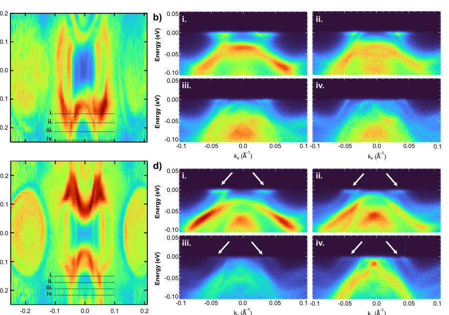
<figcaption class="paper-figure-caption"><b>Fig 5.</b> Figure 5: Comparison of cuts in each termination near the location of the flat bands a Termination B, where the lowercase roman numerals label the locations of the cuts shown in b i-iv. b Corresponding energy-momentum cuts. No flat bands are seen in termination B. c Termination A, which exhibits the flat bands. The lowercase roman numerals label the locations of the cuts shown in d i-iv. d Energy-momentum cuts at the locations labeled in panel c. The flat bands right below EF are indicated by the white arrows.</figcaption>
</figure>
</div>

<p><strong>Summary.</strong> This work reports experimental evidence of unexpected flat energy bands in the Weyl semimetal TaRhTe4 using ARPES. The findings highlight a significant discrepancy between theory and experiment, suggesting that topological materials can host emergent electronic states not captured by current computational models. This combination of topology and flat-band physics makes it an interesting platform for condensed matter research.</p>
<p><strong>Why it may be interesting.</strong> While focused on topology/band structure, the observation of emergent, unpredicted electronic features like flat bands provides a platform for investigating strong correlation effects or novel many-body physics that standard DFT might miss.</p>
<details>
<summary>Detailed structure</summary>
<p><strong>Main problem.</strong> The study aims to observe flat electronic bands near the Fermi level in a noncentrosymmetric bulk Weyl semimetal, as such features are rare and unexpected based on initial theoretical calculations.</p>
<p><strong>Main result.</strong> ARPES measurements reveal the presence of distinct, momentum-independent flat bands localized at specific energies below the Fermi level, particularly evident on one crystal surface termination (Termination A).</p>
<p><strong>Method.</strong> The research combines Angle-Resolved Photoemission Spectroscopy (ARPES) experiments with Density Functional Theory (DFT) calculations to probe the electronic structure.</p>
<p><strong>Model / system.</strong> The physical system is bulk TaRhTe4, classified as a noncentrosymmetric van-der Waals type-II Weyl semimetal. The analysis compares experimental measurements on different crystal terminations against theoretical predictions.</p>
<p><strong>Key observables.</strong> Flat bands near the chemical potential, Fermi surfaces (FSs), and the location/existence of Weyl points (WPs).</p>
<p><strong>Important parameters / regimes.</strong> Low temperatures (5–5.5 K) for ARPES; energy scales around 4 meV below E_F.</p>
<p><strong>Assumptions / limitations.</strong> The flat bands observed were not predicted by initial DFT calculations, suggesting physics beyond the standard theory or surface effects are at play.</p>
<p><strong>Figures summary.</strong> Figures compare calculated and measured FSs for two terminations (A and B); Figure 4 specifically highlights the momentum-independent flat bands on Termination A via EDCs/cuts.</p>
<p><strong>Paper structure.</strong> The paper establishes the material's topological nature using DFT, presents ARPES data comparing different surface terminations, identifies general agreement with theory, and then focuses heavily on the discrepancy—the unexpected appearance of flat bands in experiment versus calculation.</p>
</details>
<details>
<summary>Abstract</summary>
<p>Flat bands have been theoretically predicted for decades but have only recently been realized in quantum materials such as magic-angle twisted bilayer graphene, kagome and Lieb lattices, and rare-earth metal compounds. To date, only twisted layered materials have enabled tuning of flat-band energies near the electronic chemical potential, thereby influencing transport and thermodynamic properties. Here, we report the presence of flat bands near the chemical potential in bulk TaRhTe$_{4}$, a noncentrosymmetric van-der Waals type-II Weyl semimetal. Flat bands are rarely observed in Weyl semimetals, particularly in nonmagnetic bulk systems, and the observed flat bands were not predicted by density functional theory calculations. TaRhTe$_{4}$ therefore provides a platform in which nontrivial topology coexists with flat bands near the Fermi level, as evidenced by our angle-resolved photoemission spectroscopy measurements.</p>
</details>
<p><sub><a href="#top">↑ back to top</a></sub></p>

<p><a id="paper-2607.00474"></a></p>
<h3 id="weak-ferromagnetism-in-nismath845math-under-nanocrystallization"><a href="http://arxiv.org/abs/2607.00474v1">Weak Ferromagnetism in NiS$_2$ under Nanocrystallization</a></h3>
<p><strong>Authors:</strong> Hayato Miyazaki, Tomohiko Yoshinaga, Ojiro Miyazaki, Akira Matsuo, Koichi Kindo, Hirofumi Ishii, Tatsuya Kawae, Tetsuya Kida, Masashi Nantoh, Yoichi Ishiwata<br>
<strong>Type:</strong> experiment · <strong>Category:</strong> other · <strong>PDF:</strong> <a href="https://arxiv.org/pdf/2607.00474v1">https://arxiv.org/pdf/2607.00474v1</a><br>
<strong>Analysis basis:</strong> full PDF text, analyzed in chunks
<strong>Topic relevance:</strong> <code>analog quantum simulation</code> <strong>1/5</strong> · <code>exotic spin models in light-matter</code> <strong>1/5</strong> · <code>spintronics-quantum-optics interface</code> <strong>1/5</strong></p>
<div class="figure-strip-hint">↔ Scroll figures horizontally</div>
<div class="paper-figures-scroll">
<figure class="paper-figure-card">

<figcaption class="paper-figure-caption"><b>Fig 1.</b> Fig. 1. Structural characterization of NiS2 NCs. (a) TEM im- age. (b) Synchrotron powder XRD pattern and Rietveld refinement profile.</figcaption>
</figure>
<figure class="paper-figure-card">
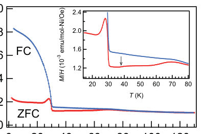
<figcaption class="paper-figure-caption"><b>Fig 2.</b> Fig. 2. ZFC and FC M/H curves of NiS2 NCs measured at H = 1000 Oe. The inset shows an enlarged view around the two antiferromagnetic anomalies; the arrow marks the TN1-related anomaly.</figcaption>
</figure>
<figure class="paper-figure-card">

<figcaption class="paper-figure-caption"><b>Fig 3.</b> Fig. 3. Temperature dependence of C/T for NiS2 NCs. The ar- row marks the TN1-related anomaly.</figcaption>
</figure>
<figure class="paper-figure-card">

<figcaption class="paper-figure-caption"><b>Fig 4.</b> Fig. 4(c). Finite remanence and coercivity are observed below TN2, whereas the hysteretic component is essen- tially absent at 30 K. The exchange-bias field HEB and coercive field Hc were estimated from the positive and negative coercive fields, H+ c and H− c , as</figcaption>
</figure>
<figure class="paper-figure-card">
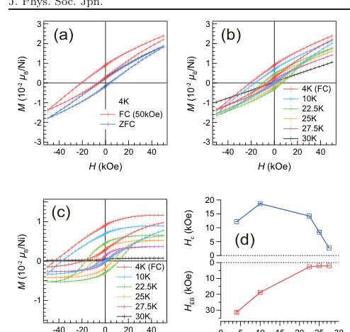
<figcaption class="paper-figure-caption"><b>Fig 5.</b> Fig. 4. Magnetic hysteresis and exchange bias in NiS2 NCs. (a) M-H curves at 4 K after ZFC and FC processes. (b) Temperature- dependent M-H curves measured after field cooling to 4 K. (c) Background-subtracted hysteresis loops. (d) Temperature depen- dences of Hc and HEB.</figcaption>
</figure>
</div>

<p><strong>Summary.</strong> This work characterizes the weak ferromagnetism in NiS2 nanocrystals by measuring their magnetization across temperature ranges relative to antiferromagnetic transitions. The key finding is that the strong magnetic hysteresis below the lower transition is attributed to uncompensated surface moments, which successfully explains the observed field-cooling effects while simultaneously constraining theoretical models of bulk magnetism.</p>
<p><strong>Why it may be interesting.</strong> While focused on magnetism, the study's rigorous comparison of bulk vs. nanoscale magnetic responses, coupled with detailed characterization of phase transitions via heat capacity, provides a model for how dimensionality and interfaces fundamentally alter many-body quantum ground states.</p>
<details>
<summary>Detailed structure</summary>
<p><strong>Main problem.</strong> The study investigates the origin of weak ferromagnetism observed in NiS2, specifically determining whether this magnetism arises from homogeneous canting throughout the bulk or is localized at structural features like domain walls.</p>
<p><strong>Main result.</strong> The pronounced hysteretic ferromagnetic response below the lower antiferromagnetic transition temperature is best explained by uncompensated surface moments generated where the low-temperature magnetic order terminates at the nanocrystal surfaces.</p>
<p><strong>Method.</strong> Magnetization (M-H) and specific heat measurements were performed on synthesized NiS2 nanocrystals, comparing results above and below the critical transition temperatures.</p>
<p><strong>Model / system.</strong> The physical system is structurally well-ordered NiS2 nanocrystals ($\sim 27$ nm). The analysis contrasts two theoretical models for weak ferromagnetism: homogeneous canting (volume property) versus localization at domain walls (interface property).</p>
<p><strong>Key observables.</strong> Hysteretic ferromagnetic response, large coercivity, exchange bias, and vertical loop shift observed below $T_{N2}$; nearly linear M-H response above $T_{N2}$.</p>
<p><strong>Important parameters / regimes.</strong> Nanocrystal diameter ($\sim 27$ nm); Antiferromagnetic transition temperatures ($T_{N1} \simeq 39$ K, $T_{N2} \simeq 30$ K).</p>
<p><strong>Assumptions / limitations.</strong> The analysis assumes that the observed magnetic features are highly sensitive to nanoscale confinement effects, allowing differentiation between bulk and surface contributions.</p>
<p><strong>Figures summary.</strong> Figures show temperature dependence of magnetization (ZFC/FC) confirming two transitions; hysteresis loops demonstrate strong magnetic signatures only below $T_{N2}$, which are analyzed for exchange bias and coercivity.</p>
<p><strong>Paper structure.</strong> The paper establishes the bulk properties, synthesizes nanocrystals, measures magnetic responses across different temperatures, and then uses the temperature-dependent contrast between hysteretic (low T) and linear (high T) behavior to rule out competing theoretical models in favor of surface moment generation.</p>
</details>
<details>
<summary>Abstract</summary>
<p>Structurally well-ordered NiS$_2$ nanocrystals with an average diameter of $27.0 \pm 6.5$ nm retain the bulk-like two-step antiferromagnetic transitions, as shown by magnetization and heat-capacity measurements. Below the lower transition, the nanocrystals exhibit a hysteretic ferromagnetic response with large coercivity, exchange bias, and a vertical loop shift after field cooling, whereas the $M$-$H$ response just above the transition is nearly linear. These features are best explained by uncompensated surface moments generated where the low-temperature antiferromagnetic order terminates at the nanocrystal surface. The absence of a clear additional bulk-like weak-ferromagnetic component constrains homogeneous-canting models and indirectly favors a domain-wall scenario for the weak ferromagnetism of bulk NiS$_2$.</p>
</details>
<p><sub><a href="#top">↑ back to top</a></sub></p>

<p><a id="paper-2607.00762"></a></p>
<h3 id="deconfined-criticality-between-an-antiferromagnetic-insulator-and-a-nodal-d-wave-superconductor-a-quantum-monte-carlo-study"><a href="http://arxiv.org/abs/2607.00762v1">Deconfined criticality between an antiferromagnetic insulator and a nodal d-wave superconductor: a quantum Monte Carlo study</a></h3>
<p><strong>Authors:</strong> Chuang Chen, Subir Sachdev, Zi Yang Meng<br>
<strong>Type:</strong> theory · <strong>Category:</strong> strongly correlated electrons · <strong>PDF:</strong> <a href="https://arxiv.org/pdf/2607.00762v1">https://arxiv.org/pdf/2607.00762v1</a><br>
<strong>Analysis basis:</strong> full PDF text, analyzed in chunks
<strong>Topic relevance:</strong> <code>Keldysh / 2PI / non-Gaussian methods</code> <strong>1/5</strong> · <code>analog quantum simulation</code> <strong>1/5</strong></p>
<div class="figure-strip-hint">↔ Scroll figures horizontally</div>
<div class="paper-figures-scroll">
<figure class="paper-figure-card">

<figcaption class="paper-figure-caption"><b>Fig 1.</b> Fig. 1. Phase diagram obtained from QMC simulation. The x-axis is −r and y-axis is κτ . There are three phases namely d-wave superconductor (dSC), anti- ferromagnetic Mott insulator (AFM) and deconfined phase of the SU(2) gauge field (deconfined). The insets schematically illustrate the staggered spin configuration of the AFM phase and the opposite pairing signs on the horizontal and vertical bonds of the dSC phase. The dots (star and circle) on the phase boundaries are determined from our parameter scans in the phase diagram as the transition point (Fig. 2 and Fig. 3). The four triangular dots mark the parameters of the spectral study (Fig. 4).</figcaption>
</figure>
<figure class="paper-figure-card">
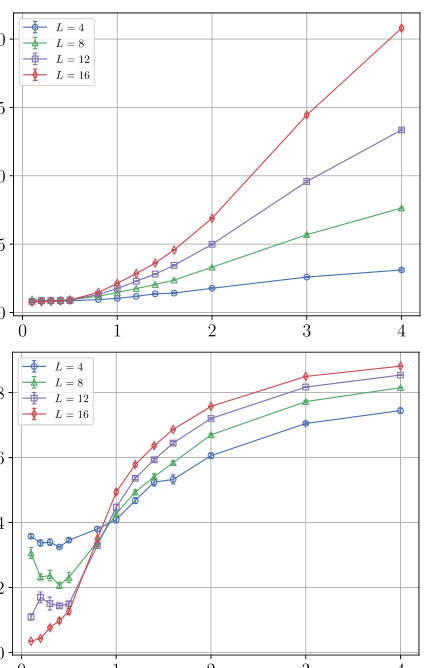
<figcaption class="paper-figure-caption"><b>Fig 2.</b> Fig. 2. AFM structure factor and correlation ratio across Deconfined-to-AFM transition. (a) The structure factor of the AFM phase χS is measured at the AFM ordered wave vector q = M as a function of κτ . Here we fix J = 1 as the energy unit and κ = 20 and the simulations are performed with linear system sizes L = 4, 8, 12, 16 and inverse temperature β = 2L. As κτ increases, the AFM order also becomes clearer. (b) The correlation ratio of the AFM phase rAFM as a function of κτ . The crossing of the correlation ratio indicates the position of quantum critical point between the phase with deconfined SU(2) gauge field and π-flux spinon and confined AFM phase.</figcaption>
</figure>
<figure class="paper-figure-card">
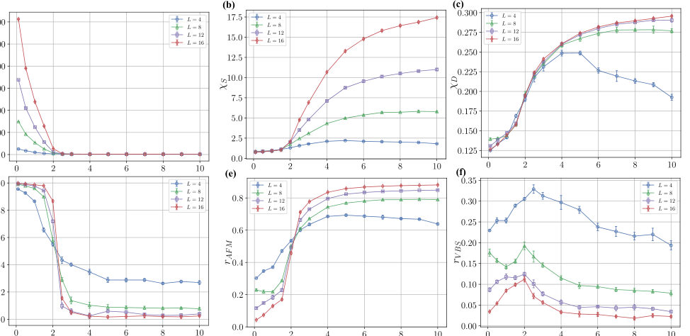
<figcaption class="paper-figure-caption"><b>Fig 3.</b> Fig. 3. Structure factors and correlation ratio of dSC, AFM and VBS orders across dSC-to-AFM transition. We set κ = 20, m = 0.1, g = 0.54/c0, V1 = 4/c0 −3c0, K1 = 3c0, J1 = 3c0 in Eq. (7) and perform the QMC simulations along the path of r = −15 and varying κτ (the right red scan in Fig. 1), with linear system sizes L = 4, 8, 12, 16 and inverse temperature β = 2L. (a) The structure factor of the dSC phase χel, d as a function of κτ . As κτ increases, dSC order decreases and vanishes. (b) The structure factor of the AFM phase χS. As κτ increases, AFM order starts to increase at the point where dSC order starts to decrease. (c) The structure factor of VBS χD. As κτ increases, the VBS order...</figcaption>
</figure>
<figure class="paper-figure-card">

<figcaption class="paper-figure-caption"><b>Fig 4.</b> Fig. 4. Electron and spin spectra across dSC-to-AFM transition. (a) shows the electron spectra A(k, ω) inside the dSC phase with r = −15, κτ = 1, while (b) r = −8, κτ = 2 and (c) r = 15, κτ = 10 are electron spectra inside the AFM phase, with (b) closer to the transition point. (d), (e) and (f) are the corresponding spin spectra χS(q, ω). For electron spectra A(k, ω), we plot the high symmetry path connecting X(π, 0) →S(π/2, π/2) →Y(0, π). While for the spin spectra, we use path Γ(0, 0) →X(π, 0) →M(π, π) →Γ(0, 0). In the dSC phase, the electron shows Dirac-like dispersion, and the spin spectrum is in the shape of two-spinon continuum of U(1) Dirac spin liquid. In the AFM phase, however,...</figcaption>
</figure>
</div>

<p><strong>Summary.</strong> The authors use Quantum Monte Carlo simulations on a fractionalized lattice model to study the transition between an antiferromagnetic insulator and a d-wave superconductor. They find evidence for a deconfined quantum critical point where both orders vanish continuously, characterized by changes in the electronic dispersion from gapless Dirac cones to gapped states.</p>
<p><strong>Why it may be interesting.</strong> This work provides advanced numerical evidence for deconfined quantum criticality in models relevant to high-Tc superconductivity, utilizing sophisticated gauge field theories within a QMC framework that is highly valuable for understanding emergent quantum phases.</p>
<details>
<summary>Detailed structure</summary>
<p><strong>Main problem.</strong> The study investigates the quantum phase transition (QPT) between an antiferromagnetic insulator (Néel state) and a nodal d-wave superconductor in strongly correlated electron systems.</p>
<p><strong>Main result.</strong> Evidence is found for a second-order deconfined quantum phase transition (DQCP) where both Néel and d-wave superconducting orders vanish continuously. The electronic dispersion changes from gapless Dirac to gapped as the system moves into the AFM state.</p>
<p><strong>Method.</strong> Quantum Monte Carlo (QMC) simulations are employed using a fractionalized representation of electrons into fermionic spinons and bosonic chargons coupled to an SU(2) lattice gauge field.</p>
<p><strong>Model / system.</strong> The model is defined on the square lattice at half-filling, utilizing an SU(2) lattice gauge theory framework. The electron degrees of freedom are decomposed into spinon and chargon components whose dynamics govern the competition between magnetic and superconducting orders.</p>
<p><strong>Key observables.</strong> Spin structure factor ($\chi_S$), pairing structure factor ($\chi_{el, d}$), electronic spectral function ($A(\mathbf{k}, \omega)$), and correlation ratios for AFM, dSC, and VBS order.</p>
<p><strong>Important parameters / regimes.</strong> The transition is mapped by varying coupling constants like $\kappa$ and $\kappa_	au$, which tune the relative strengths of magnetic and superconducting interactions.</p>
<p><strong>Assumptions / limitations.</strong> The method relies on successfully fractionalizing electrons into spinons and chargons to avoid the sign problem in QMC simulations. The analysis also assumes that specific gauge-invariant composite operators correctly capture physical observables.</p>
<p><strong>Figures summary.</strong> Figures illustrate phase diagrams showing three distinct regimes (dSC, AFM, deconfined) separated by transition lines, alongside spectral plots demonstrating gapless Dirac dispersion in the dSC phase and gapped behavior in the AFM phase across the critical point.</p>
<p><strong>Paper structure.</strong> The paper systematically analyzes the Hamiltonian decomposition into spinon and chargon parts. It then applies QMC simulations to calculate various correlation functions and spectra across different parameter regimes, culminating in a detailed comparison of spectral features near the proposed DQCP.</p>
</details>
<details>
<summary>Abstract</summary>
<p>We present a quantum Monte Carlo study of the transition between the insulating Néel state and the nodal $d$-wave superconductor on the square lattice at half-filling. We access a regime of frustrated magnetic order without a sign problem using a parton representation of the electron in terms of fermionic spinons and bosonic chargons. Both partons move in a background $π$-flux (so the electron experiences no net flux) and are coupled to a quantum fluctuating SU(2) lattice gauge field. In contrast to earlier studies directly on the electronic degrees of freedom, we find evidence for a second-order deconfined quantum phase transition at which both the Néel and $d$-wave superconductivity orders vanish continuously. We compute correlators of the spinon-chargon composite with the same quantum numbers as the electron: we find a gapless Dirac dispersion inside the $d$-wave superconductor, turning into a gapped dispersion in the antiferromagnet.</p>
</details>
<p><sub><a href="#top">↑ back to top</a></sub></p>

<p><a id="paper-2607.00715"></a></p>
<h3 id="gsoqdc-a-gui-driven-interactive-framework-for-end-to-end-simulation-of-optical-quantum-data-centers"><a href="http://arxiv.org/abs/2607.00715v1">GsOQDC: A GUI-Driven Interactive Framework for End-to-End Simulation of Optical Quantum Data Centers</a></h3>
<p><strong>Authors:</strong> Seyed Navid Elyasi, Sima Bahrani, Rui Wang, Dimitra Simeonidou, Paolo Monti, Rui Lin<br>
<strong>Type:</strong> theory · <strong>Category:</strong> quantum information and computing · <strong>PDF:</strong> <a href="https://arxiv.org/pdf/2607.00715v1">https://arxiv.org/pdf/2607.00715v1</a><br>
<strong>Analysis basis:</strong> full PDF text, analyzed in chunks
<strong>Topic relevance:</strong> <code>methods for driven-dissipative</code> <strong>1/5</strong> · <code>non-equilibrium dynamics</code> <strong>1/5</strong></p>
<div class="figure-strip-hint">↔ Scroll figures horizontally</div>
<div class="paper-figures-scroll">
<figure class="paper-figure-card">
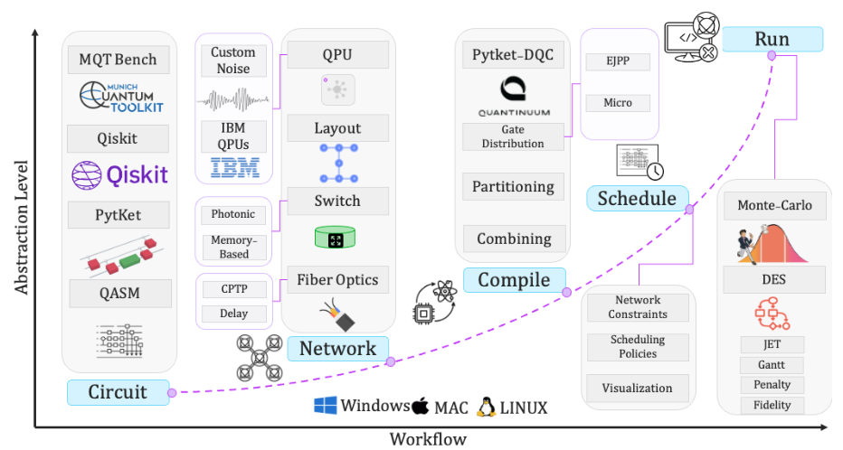
<figcaption class="paper-figure-caption"><b>Fig 1.</b> Fig. 1: GsOQDC workflow and software architecture. The platform integrates the end-to-end DQC workflow, enabling users to progress from quantum-circuit design and optical-network configuration to distributed compilation, scheduling, execution, and performance evaluation within a single graphical environment.</figcaption>
</figure>
<figure class="paper-figure-card">

<figcaption class="paper-figure-caption"><b>Fig 2.</b> Fig. 2: GsOQDC Network Designer. (a) Interactive topology editor for constructing Optical Quantum Data Center architectures using QPUs, optical components, and communication links. (b) Component configuration panel, accessible via right-click, allowing users to modify hardware and noise parameters, including qubit properties, gate errors, coherence times, readout errors, and device-specific calibration data. Together, these capabilities enable realistic, cross-layer modeling of distributed quantum-computing infrastructures.</figcaption>
</figure>
<figure class="paper-figure-card">

<figcaption class="paper-figure-caption"><b>Fig 3.</b> Fig. 3: Distributed-workload scheduling in GsOQDC. (a) Interactive Gantt-chart visualization showing local operations, remote-gate execution, and communication events across multiple QPUs. (b) Contextual information panel displayed when hovering over a scheduled operation, providing timing, duration, resource, and process details. (c) User-configurable gate and process timing parameters.</figcaption>
</figure>
</div>

<p><strong>Summary.</strong> The paper introduces GsOQDC, an open-source GUI framework designed to simulate Optical Quantum Data Centers (OQDCs) for Distributed Quantum Computation. It unifies the entire workflow—from circuit design through network scheduling and execution simulation—into one platform. This allows researchers to evaluate complex cross-layer performance metrics like entanglement dynamics and system fidelity in a practical, graphical environment.</p>
<p><strong>Why it may be interesting.</strong> This work is highly relevant as it tackles the practical engineering challenge of simulating large-scale quantum networking, which underpins future distributed quantum computation architectures.</p>
<details>
<summary>Detailed structure</summary>
<p><strong>Main problem.</strong> The existing software ecosystem for Quantum Data Centers (QDCs) is fragmented, lacking an integrated environment to evaluate end-to-end behavior across quantum applications and optical network resources.</p>
<p><strong>Main result.</strong> GsOQDC provides the first graphical platform enabling end-to-end design-space exploration of distributed quantum applications while jointly considering optical-network behavior and entanglement-resource dynamics.</p>
<p><strong>Method.</strong> The framework integrates circuit modeling, optically switched interconnection, network-aware compilation, scheduling, and a Discrete-Event Simulation (DES) engine for cross-layer evaluation.</p>
<p><strong>Model / system.</strong> The system modeled is an Optical Quantum Data Center (OQDC), comprising multiple interconnected Quantum Processing Units (QPUs) linked by optical networks to perform Distributed Quantum Computation (DQC).</p>
<p><strong>Key observables.</strong> Entanglement-resource dynamics, system-level performance, Fidelity, Communication overhead, Entanglement-resource utilization, and Job Execution Time (JET).</p>
<p><strong>Important parameters / regimes.</strong> Gate errors, coherence times, network architecture parameters, and scheduling constraints.</p>
<p><strong>Assumptions / limitations.</strong> The framework assumes the need to bridge gaps between tools that either lack compilation/scheduling or assume abstract communication models.</p>
<p><strong>Figures summary.</strong> Figure 1 illustrates the unified GsOQDC workflow (Circuit $
ightarrow$ Network $
ightarrow$ Compile $
ightarrow$ Schedule $
ightarrow$ Run). Figure 2 shows the interactive Network Designer for OQDCs. Figure 3 visualizes distributed workload scheduling using Gantt charts.</p>
<p><strong>Paper structure.</strong> The paper introduces GsOQDC, detailing its architecture (Fig. 1), providing an interactive GUI for network design and parameter setting (Fig. 2), and demonstrating the simulation of complex workloads via scheduling visualizations (Fig. 3).</p>
</details>
<details>
<summary>Abstract</summary>
<p>We present GsOQDC, an open-source graphical framework integrating optical-network design, distributed quantum-circuit compilation, scheduling, and DES-based remote-gate simulation, enabling end-to-end cross-layer evaluation of entanglement-resource dynamics and system-level performance in Optical Quantum Data Centers.</p>
</details>
<p><sub><a href="#top">↑ back to top</a></sub></p>

<p><a id="paper-2607.01193"></a></p>
<h3 id="non-signaling-assistance-in-prepare-and-measure-scenarios-with-classical-communication"><a href="http://arxiv.org/abs/2607.01193v1">Non-signaling assistance in prepare-and-measure scenarios with classical communication</a></h3>
<p><strong>Authors:</strong> José Nogueira, Carlos Vieira, Lucas E. A. Porto, Lucas Pollyceno, Rafael Rabelo, Otfried Gühne<br>
<strong>Type:</strong> theory · <strong>Category:</strong> quantum information and computing · <strong>PDF:</strong> <a href="https://arxiv.org/pdf/2607.01193v1">https://arxiv.org/pdf/2607.01193v1</a><br>
<strong>Analysis basis:</strong> full PDF text, analyzed in chunks
<strong>Topic relevance:</strong> <code>entanglement &amp; information structure</code> <strong>1/5</strong> · <code>quantum measurements</code> <strong>1/5</strong></p>
<div class="figure-strip-hint">↔ Scroll figures horizontally</div>
<div class="paper-figures-scroll">
<figure class="paper-figure-card">
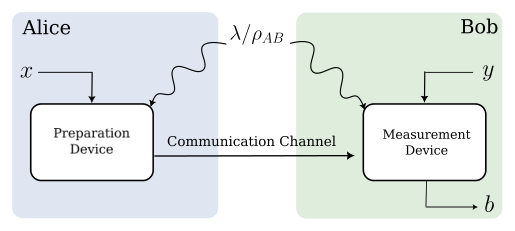
<figcaption class="paper-figure-caption"><b>Fig 1.</b> FIG. 1. Schematic of a prepare-and-measure scenario. Alice en- codes her input x into a preparation device, which emits either a classical or quantum system sent to Bob. Bob receives the system, chooses an input y for his measurement device, and produces an output b. The devices may share correlations, which can be clas- sical (shared randomness λ) or quantum (arising from a shared entangled state ρAB).</figcaption>
</figure>
<figure class="paper-figure-card">
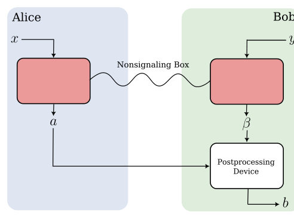
<figcaption class="paper-figure-caption"><b>Fig 2.</b> FIG. 2. Schematic representation of a prepare-and-measure sce- nario with non-adaptive non-signaling assistance, according to the definition in Eq. (6). Alice and Bob share an arbitrary non- signaling box in the Bell scenario (nX, nA; nY , nβ). Alice inputs x into her share of the box, obtains outcome a, and communicates it to Bob. Bob independently inputs y into his share of the box and obtains β. Finally, he post-processes a,β to produce the output b.</figcaption>
</figure>
<figure class="paper-figure-card">
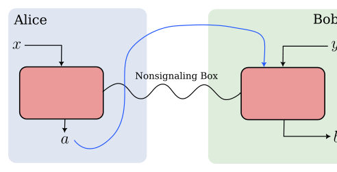
<figcaption class="paper-figure-caption"><b>Fig 3.</b> FIG. 3. Schematic representation of a prepare-and-measure sce- nario with adaptive non-signaling assistance, according to Eq. (8). Alice and Bob share an arbitrary non-signaling box in the Bell sce- nario (nX, nA; nY nA, nB). Alice inputs x into her share of the box, obtains outcome a, and communicates it to Bob. Bob then inputs the composite setting (y, a) into his share of the box and obtains the output b. The protocol is adaptive because Bob’s input to the shared box depends on the message received from Alice.</figcaption>
</figure>
</div>

<p><strong>Summary.</strong> This paper rigorously compares the power of adaptive versus non-adaptive Non-Signaling (NS) assistance in Prepare-and-Measure quantum communication models. It establishes that while NS assistance can simulate full quantum communication, adaptivity only yields a strict advantage over non-adaptivity under specific structural conditions related to input discrimination tasks.</p>
<p><strong>Why it may be interesting.</strong> This work provides fundamental theoretical bounds on what can be achieved using correlations weaker than entanglement but stronger than classical communication, offering insights into resource theories beyond standard quantum channels.</p>
<details>
<summary>Detailed structure</summary>
<p><strong>Main problem.</strong> The paper investigates the operational advantage of using adaptive versus non-adaptive Non-Signaling (NS) assistance in Prepare-and-Measure (PM) quantum communication scenarios.</p>
<p><strong>Main result.</strong> Adaptive NS assistance provides a strict advantage over non-adaptive assistance only in specific PM scenarios characterized by input-discrimination inequalities. Furthermore, non-adaptive NS assistance is shown to be powerful enough to simulate quantum communication for the same message dimension.</p>
<p><strong>Method.</strong> The authors characterize achievable probability distributions using linear programming techniques and structural reductions, comparing sets defined by adaptive vs. non-adaptive correlation models.</p>
<p><strong>Model / system.</strong> The model is a Prepare-and-Measure (PM) scenario $(n_X; n_Y, n_B)_{nA}$, where Alice prepares a message $a$ based on input $x$, and Bob measures given input $y$ and the message $a$. The resource analyzed is Non-Signaling (NS) correlation assistance.</p>
<p><strong>Key observables.</strong> The achievable probability distributions $q(b|x y)$ characterizing the communication behavior, and derived constraints like $\max_{x \in [nX]} q(b|x, y) \le nA$.</p>
<p><strong>Important parameters / regimes.</strong> Message dimension ($n_A$), input dimensions ($n_X, n_Y$), and output dimension ($n_B$). The comparison hinges on the relationship between $n_A$ and the system sizes.</p>
<p><strong>Assumptions / limitations.</strong> The analysis is restricted to classical communication channels assisted by NS correlations. Key results rely on reducing general scenarios to single-input subscenarios ($n_Y=1$).</p>
<p><strong>Figures summary.</strong> Figures illustrate schematics for non-adaptive and adaptive NS assistance, contrasting the mathematical definitions of the achievable sets.</p>
<p><strong>Paper structure.</strong> The paper systematically defines the PM model, characterizes behaviors under classical randomness, then analyzes the constraints imposed by non-adaptive NS assistance (showing it simulates quantum communication). Finally, it rigorously compares this to adaptive NS assistance, identifying the precise conditions for a strict advantage.</p>
</details>
<details>
<summary>Abstract</summary>
<p>Extracting the full power of non-local correlations in prepare-and-measure (PM) scenarios requires precise control over the timing and structure of the receiver's measurements. Indeed, recent developments in entanglement-assisted classical communication scenarios have shown that adaptive strategies-where the receiver uses the transmitted message to guide their measurement choice-can outperform standard non-adaptive protocols. Moving beyond quantum theory, however, the ultimate limits of such advantages remain largely unexplored. In this work, we thoroughly study adaptive and non-adaptive non-signaling (NS) assistance in PM scenarios with classical communication. We provide simple characterizations of the sets of behaviors that can be realized using both non-adaptive and adaptive NS assistance in arbitrary PM scenarios. As a consequence, we show that non-adaptive NS assistance is already strong enough to reproduce quantum communication with the same message dimension: the transmission of a qudit can be simulated by a classical dit assisted non-adaptively by NS correlations. We then compare adaptive and non-adaptive NS assistance. We prove that any adaptive NS advantage can be traced back to scenarios in which the receiver has no measurement choice, ruling out the genuinely multi-setting advantages found in entanglement-assisted quantum protocols. Finally, we identify all PM scenarios where adaptive NS strategies provide a strict advantage over non-adaptive ones.</p>
</details>
<p><sub><a href="#top">↑ back to top</a></sub></p>

<p><a id="paper-2607.00308"></a></p>
<h3 id="quantum-advantage-prediction-in-turbulent-free-space-quantum-illumination"><a href="http://arxiv.org/abs/2607.00308v1">Quantum advantage prediction in turbulent free-space quantum illumination</a></h3>
<p><strong>Authors:</strong> Yu Tang, Beining Xia, Qianqian Liu, Cuihong Wen, Heng Fan, Jieci Wang<br>
<strong>Type:</strong> theory · <strong>Category:</strong> quantum information and computing · <strong>PDF:</strong> <a href="https://arxiv.org/pdf/2607.00308v1">https://arxiv.org/pdf/2607.00308v1</a><br>
<strong>Analysis basis:</strong> full PDF text, analyzed in chunks
<strong>Topic relevance:</strong> <code>interference shaping light</code> <strong>1/5</strong> · <code>quantum optics experiment</code> <strong>1/5</strong></p>
<div class="figure-strip-hint">↔ Scroll figures horizontally</div>
<div class="paper-figures-scroll">
<figure class="paper-figure-card">

<figcaption class="paper-figure-caption"><b>Fig 1.</b> FIG. 1: Diurnal phase evolution of QI advantage under meteorological forcing. The polar clock maps</figcaption>
</figure>
<figure class="paper-figure-card">

<figcaption class="paper-figure-caption"><b>Fig 2.</b> FIG. 2: Scatter and density distributions of QI advantage under varying meteorological parameters.</figcaption>
</figure>
<figure class="paper-figure-card">
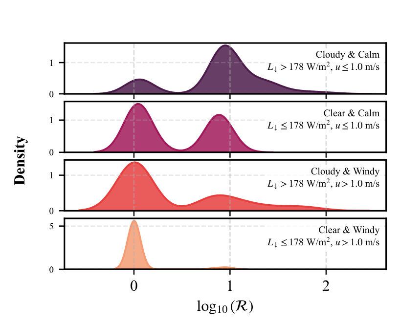
<figcaption class="paper-figure-caption"><b>Fig 3.</b> FIG. 3: Probability density distributions of log10 R in the nocturnal boundary layer (GHI = 0 W/m2).</figcaption>
</figure>
<figure class="paper-figure-card">
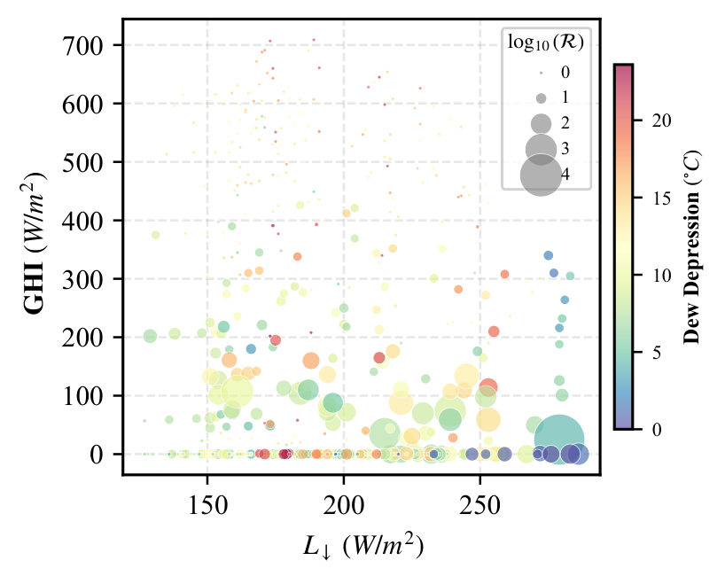
<figcaption class="paper-figure-caption"><b>Fig 4.</b> FIG. 4: Multidimensional phase space representation of the QI advantage. The magnitude of log10 R</figcaption>
</figure>
<figure class="paper-figure-card">
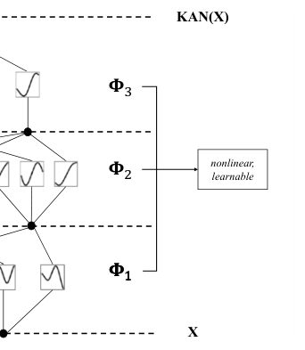
<figcaption class="paper-figure-caption"><b>Fig 5.</b> FIG. 5: Architecture of the KAN.</figcaption>
</figure>
</div>

<p><strong>Summary.</strong> The paper addresses the critical challenge of deploying Quantum Illumination through turbulent air by developing a sophisticated, data-driven framework. It merges macroscopic meteorological measurements with microscopic quantum channel dynamics using Kolmogorov-Arnold networks. This allows for the dynamic prediction and quantification of quantum advantage across diverse, real-world atmospheric conditions.</p>
<p><strong>Why it may be interesting.</strong> This work bridges classical atmospheric physics, advanced machine learning, and quantum optics by providing a predictive tool for maintaining quantum coherence in harsh real-world environments. The use of KAN for physical parameterization is particularly novel.</p>
<details>
<summary>Detailed structure</summary>
<p><strong>Main problem.</strong> The core challenge is quantifying how atmospheric turbulence degrades the quantum advantage offered by Quantum Illumination (QI) for target detection in free-space channels.</p>
<p><strong>Main result.</strong> The authors propose a physics-driven framework using Kolmogorov-Arnold networks to map standard meteorological variables directly to the temporal evolution of the quantum advantage, enabling all-weather operation.</p>
<p><strong>Method.</strong> They integrate advanced machine learning (KAN) with established atmospheric models (MOST theory) to create an end-to-end system that predicts turbulence effects on QI performance.</p>
<p><strong>Model / system.</strong> The physical system is free-space quantum illumination using a Two-Mode Squeezed Vacuum state. The model links macroscopic weather data (T, P, GHI, etc.) through boundary layer physics to the microscopic degradation of quantum correlations.</p>
<p><strong>Key observables.</strong> Quantum advantage ($\log_{10} R$), average error probability ($ar{P}_{	ext{err}}$), and the refractive index structure constant ($C_n^2$).</p>
<p><strong>Important parameters / regimes.</strong> Meteorological parameters include Global Horizontal Irradiance (GHI), longwave radiation ($L_{\downarrow}$), dew depression, and wind speed ($u$). Key regimes are defined by GHI levels (day vs. night).</p>
<p><strong>Assumptions / limitations.</strong> The framework relies on coupling the MOST theory to deep learning models; initial simplifications may assume near-ground horizontal channels.</p>
<p><strong>Figures summary.</strong> Figures illustrate comparisons between different turbulence prediction models (KAN vs. AGA-BP) and show how QI advantage peaks under specific, narrow atmospheric conditions (e.g., twilight transitions or zero GHI with strong $L_{\downarrow}$).</p>
<p><strong>Paper structure.</strong> The paper progresses from establishing the physical problem (QI in turbulence), detailing the necessary meteorological modeling (MOST/Energy Balance), introducing the advanced ML framework (KAN), and finally applying this integrated system to predict optimal operational windows for quantum sensing.</p>
</details>
<details>
<summary>Abstract</summary>
<p>Quantum illumination offers a significant theoretical advantage for target detection in high background noise environments. However, its practical deployment in free-space channels is hindered by atmospheric turbulence. Stochastic fluctuations in atmospheric turbulence inevitably degrade the quantum signature, rendering the real-time evaluation of quantum advantage under such dynamic conditions a critical yet unresolved challenge. To circumvent the reliance on costly direct turbulence measurements, we propose a physics-driven framework that integrates Kolmogorov-Arnold networks directly bridge macroscopic meteorological observations with microscopic quantum channel dynamics. Trained on 105,120 samples from 12 climatically diverse sites and validated on 26,280 unseen samples from three extreme boundary conditions (arid continental, tropical maritime, high-altitude plateau), our approach establishes a physically consistent mapping from standard meteorological variables to the temporal evolution of the quantum advantage. This end-to-end system dynamically quantifies the degradation of quantum advantage across diverse turbulence conditions. Our results provide a rigorous theoretical and data-driven pathway for environmental adaptation, facilitating the transition of quantum radar networks from proof-of-principle demonstrations to all-weather operational systems.</p>
</details>
<p><sub><a href="#top">↑ back to top</a></sub></p>

<p><a id="paper-2607.00266"></a></p>
<h3 id="quantum-advantage-resource-of-a-two-mode-gaussian-state-analytical-theory-of-convex-optimization-and-a-galois-no-go-for-the-closed-form-solution"><a href="http://arxiv.org/abs/2607.00266v1">Quantum-advantage resource of a two-mode Gaussian state: Analytical theory of convex optimization and a Galois no-go for the closed-form solution</a></h3>
<p><strong>Authors:</strong> Kunwar Kalra, V. V. Kocharovsky<br>
<strong>Type:</strong> theory · <strong>Category:</strong> quantum information and computing · <strong>PDF:</strong> <a href="https://arxiv.org/pdf/2607.00266v1">https://arxiv.org/pdf/2607.00266v1</a><br>
<strong>Analysis basis:</strong> full PDF text, analyzed in chunks
<strong>Topic relevance:</strong> <code>Keldysh / 2PI / non-Gaussian methods</code> <strong>1/5</strong> · <code>entanglement &amp; information structure</code> <strong>1/5</strong></p>
<div class="figure-strip-hint">↔ Scroll figures horizontally</div>
<div class="paper-figures-scroll">
<figure class="paper-figure-card">
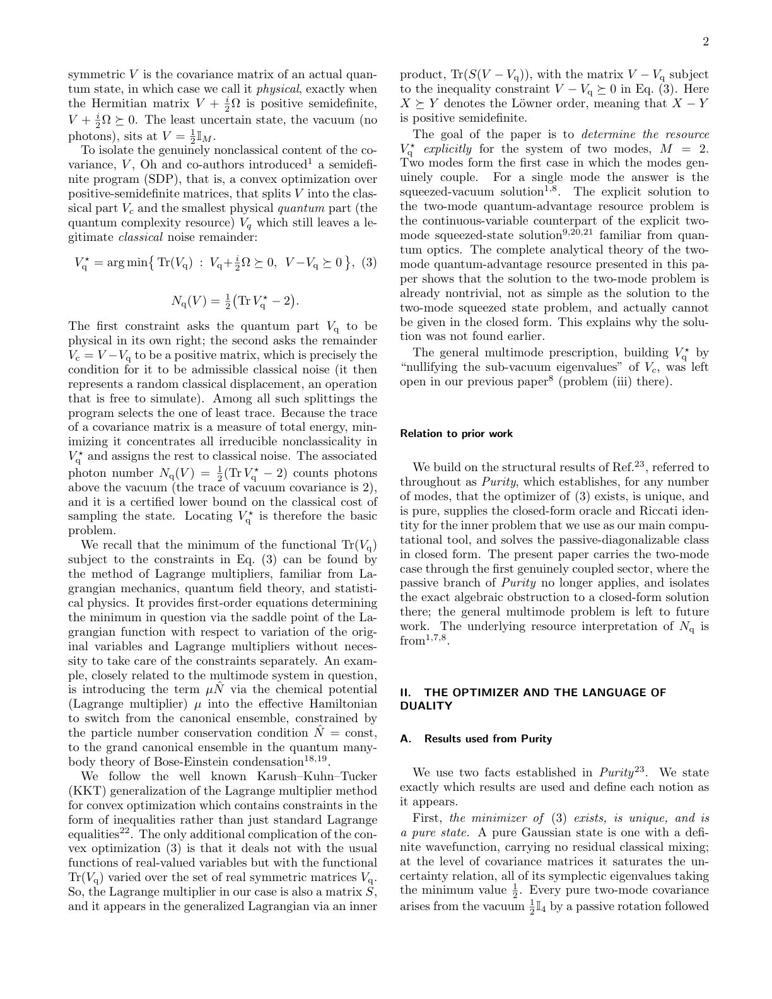
<figcaption class="paper-figure-caption"><b>Fig 1.</b> Low-resolution page preview, page 2</figcaption>
</figure>
<figure class="paper-figure-card">

<figcaption class="paper-figure-caption"><b>Fig 2.</b> Low-resolution page preview, page 3</figcaption>
</figure>
<figure class="paper-figure-card">

<figcaption class="paper-figure-caption"><b>Fig 3.</b> Low-resolution page preview, page 4</figcaption>
</figure>
<figure class="paper-figure-card">

<figcaption class="paper-figure-caption"><b>Fig 4.</b> Low-resolution page preview, page 5</figcaption>
</figure>
<figure class="paper-figure-card">
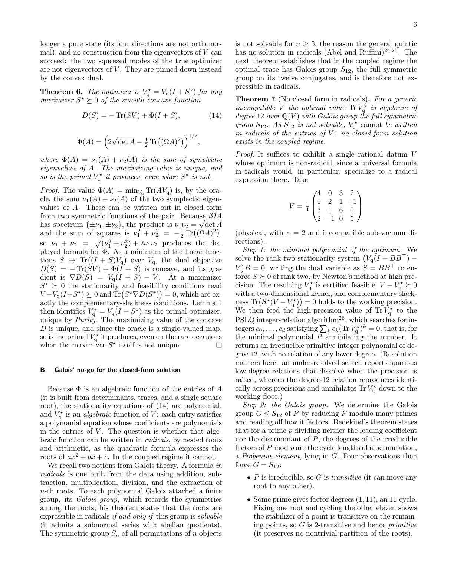
<figcaption class="paper-figure-caption"><b>Fig 5.</b> Low-resolution page preview, page 6</figcaption>
</figure>
</div>

<p><strong>Summary.</strong> This theoretical paper develops a rigorous framework to calculate the 'quantum complexity resource' from mixed Gaussian states of light. By formulating this as a convex optimization problem, the authors derive that while simple cases yield closed-form solutions, the general two-mode case requires finding the root of a high-degree polynomial, proving that no simple analytical solution exists.</p>
<p><strong>Why it may be interesting.</strong> It provides deep mathematical insight into the limitations of finding closed-form solutions for fundamental physical quantities, connecting quantum resource theory to advanced algebraic geometry (Galois theory).</p>
<details>
<summary>Detailed structure</summary>
<p><strong>Main problem.</strong> The paper tackles the problem of quantifying a 'quantum complexity resource' inherent in mixed Gaussian states of multimode light.</p>
<p><strong>Main result.</strong> For the two-mode case, the optimal quantum resource cannot be expressed in a closed form using elementary functions; instead, it is determined as the least real root of a degree-12 polynomial.</p>
<p><strong>Method.</strong> The problem is formulated and solved via convex optimization (SDP), utilizing dual maximization techniques and analyzing necessary conditions derived from KKT multipliers.</p>
<p><strong>Model / system.</strong> The system models multimode light using continuous variables, characterized by the quadrature covariance matrix V. The analysis focuses specifically on the two-mode case where modes are genuinely coupled.</p>
<p><strong>Key observables.</strong> Quantum Advantage Resource ($N_q(V)$), $    ext{Tr}(V_{\star q})$, and the degree-12 polynomial $P(x; V)$.</p>
<p><strong>Important parameters / regimes.</strong> The number of nonclassical directions ($\kappa$), which dictates whether a closed-form solution exists.</p>
<p><strong>Assumptions / limitations.</strong> The analysis relies on Slater's condition (V must be strictly mixed) and proceeds by analyzing structured regimes ($\kappa=0, 1, 2$) before tackling the generic coupled case.</p>
<p><strong>Paper structure.</strong> The paper progresses from defining the optimization problem for the quantum resource to solving it in specific low-dimensional sectors (e.g., $\kappa=1$), culminating in the derivation of a general polynomial equation whose root yields the solution for generic coupled states.</p>
</details>
<details>
<summary>Abstract</summary>
<p>We study the problem of extracting a quantum complexity resource from a mixed Gaussian state of the multimode light. We present the first complete, certificate-checked solution to this problem in a genuinely coupled sector. We carry this out for the two-mode case, the smallest case in which modes are genuinely coupled. Even in this case the solution is highly nontrivial, and we rigorously prove that it cannot be given in a closed form.</p>
</details>
<p><sub><a href="#top">↑ back to top</a></sub></p>

<p><a id="paper-2607.01221"></a></p>
<h3 id="type-iib-axion-dilaton-wormholes-and-the-bps-limit-hessian"><a href="http://arxiv.org/abs/2607.01221v1">Type IIB Axion--Dilaton Wormholes and the BPS Limit Hessian</a></h3>
<p><strong>Authors:</strong> Soo-Jong Rey<br>
<strong>Type:</strong> theory · <strong>Category:</strong> other · <strong>PDF:</strong> <a href="https://arxiv.org/pdf/2607.01221v1">https://arxiv.org/pdf/2607.01221v1</a><br>
<strong>Analysis basis:</strong> full PDF text, analyzed in chunks
<strong>Topic relevance:</strong> <code>Keldysh / 2PI / non-Gaussian methods</code> <strong>1/5</strong> · <code>methods for driven-dissipative</code> <strong>1/5</strong></p>
<div class="figure-strip-hint">↔ Scroll figures horizontally</div>
<div class="paper-figures-scroll">
<figure class="paper-figure-card">
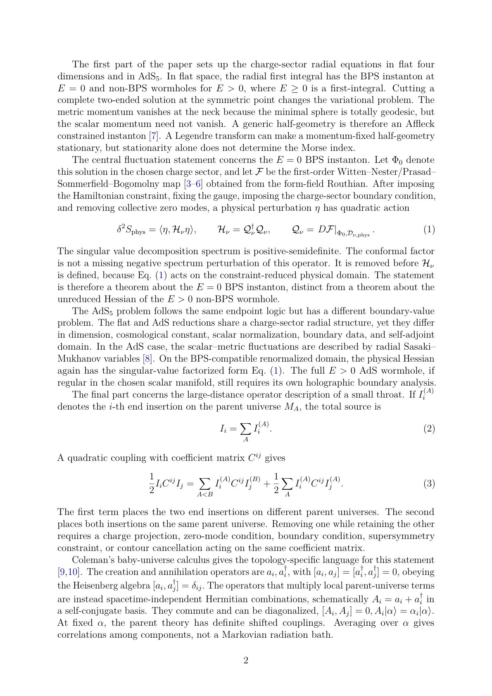
<figcaption class="paper-figure-caption"><b>Fig 1.</b> Low-resolution page preview, page 2</figcaption>
</figure>
<figure class="paper-figure-card">
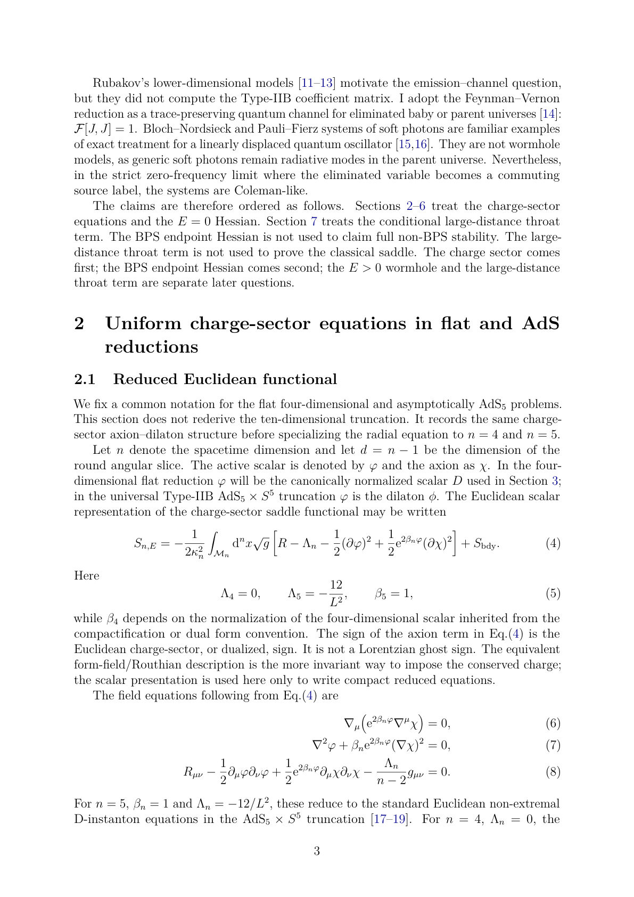
<figcaption class="paper-figure-caption"><b>Fig 2.</b> Low-resolution page preview, page 3</figcaption>
</figure>
<figure class="paper-figure-card">
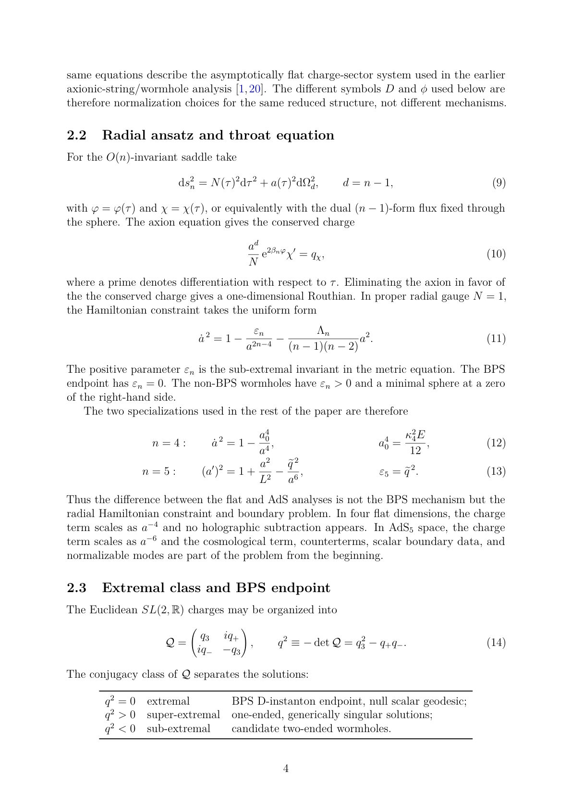
<figcaption class="paper-figure-caption"><b>Fig 3.</b> Low-resolution page preview, page 4</figcaption>
</figure>
<figure class="paper-figure-card">
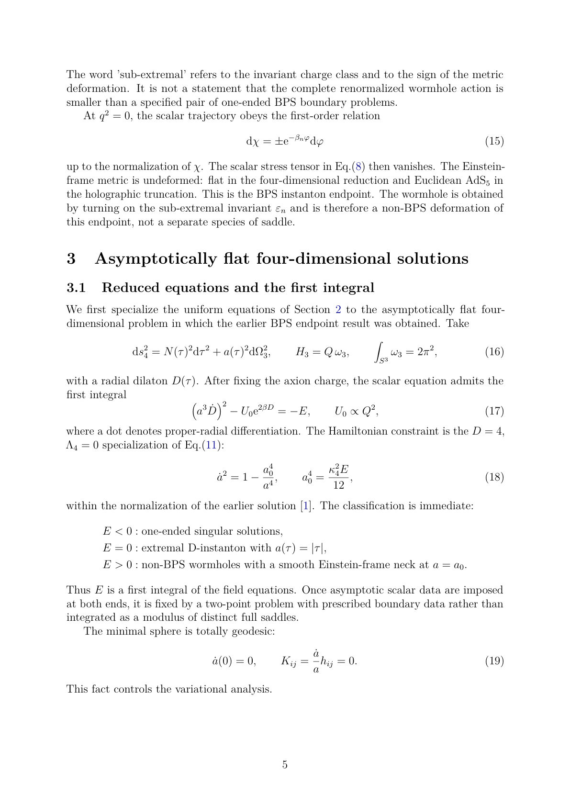
<figcaption class="paper-figure-caption"><b>Fig 4.</b> Low-resolution page preview, page 5</figcaption>
</figure>
<figure class="paper-figure-card">
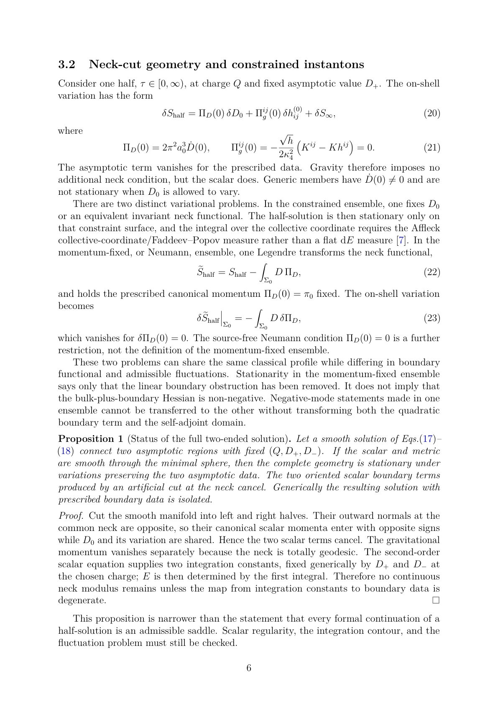
<figcaption class="paper-figure-caption"><b>Fig 5.</b> Low-resolution page preview, page 6</figcaption>
</figure>
</div>

<p><strong>Summary.</strong> This theoretical paper analyzes Type-IIB axion-dilaton wormholes, distinguishing between stable BPS instantons and unstable non-BPS wormhole deformations. The core mathematical achievement is proving that the fluctuation spectrum around the BPS endpoint factorizes into a simple quadratic form of an operator $Q^\dagger Q$. This provides strong structural constraints on quantum gravity solutions.</p>
<p><strong>Why it may be interesting.</strong> While highly specialized in quantum gravity, the rigorous mathematical techniques used—such as deriving physical operators by eliminating constrained degrees of freedom (Schur complement) and proving spectral properties via operator factorization—are analogous to methods used in effective field theories or open quantum systems.</p>
<details>
<summary>Detailed structure</summary>
<p><strong>Main problem.</strong> The paper revisits Type-IIB axion--dilaton Euclidean saddles, comparing the BPS instanton ($E=0$) to non-BPS wormholes ($E>0$). It aims to provide a rigorous understanding of the spectrum and stability of these gravitational solutions.</p>
<p><strong>Main result.</strong> The physical Hessian for the $E=0$ BPS instanton factorizes as $\mathcal{H}<em>
u = Q^\dagger</em>
u Q_
u$, establishing an endpoint theorem for the BPS sector. The analysis separates the wormhole throat structure from its long-distance multipole operator term.</p>
<p><strong>Method.</strong> The methodology involves variational analysis of the Euclidean action, deriving radial equations, and applying constraint solving (Hamiltonian/gauge fixing) to reduce the quadratic fluctuation action to a physical Hessian operator.</p>
<p><strong>Model / system.</strong> The system is Type IIB string theory compactified on geometries supporting axion-dilaton fields. The analysis covers both asymptotically flat 4D and AdS$_5$ backgrounds, treating wormholes as deformations of BPS instantons.</p>
<p><strong>Key observables.</strong> The spectrum of the physical Hessian ($\mathcal{H}_
u$), which determines stability; the energy parameter $E$; and the charge sector invariants ($q_2$).</p>
<p><strong>Important parameters / regimes.</strong> Energy parameter $E$ (determining BPS vs. non-BPS); neck radius $a_c$; and background curvature scales (e.g., AdS length scale).</p>
<p><strong>Assumptions / limitations.</strong> The Hessian factorization theorem is strictly proven only for the physical domain corresponding to the $E=0$ BPS instanton, not necessarily for the full $E>0$ wormhole stability.</p>
<p><strong>Paper structure.</strong> The paper proceeds by establishing the general Euclidean action and radial equations. It then focuses on deriving the physical Hessian for the BPS endpoint ($E=0$) via constraint imposition, demonstrating its factorization. Finally, it compares this result to non-BPS wormholes and discusses dimensional reductions (4D vs AdS$_5$).</p>
</details>
<details>
<summary>Abstract</summary>
<p>I revisit Type-IIB axion--dilaton Euclidean saddles in a specified axion charge sector. In that sector, the solution with $E=0$ is the BPS instanton, while $E>0$ gives non-BPS wormholes with a smooth throat. The two cases solve the same radial equations but define different fluctuation problems. For the $E=0$ instanton, the Hamiltonian constraint, gauge quotient, charge-sector boundary condition, and removal of collective zero modes reduce the quadratic action to a physical Hessian. This Hessian factorizes, $ {\cal H}_ν={\mathcal Q}_ν^\dagger{\mathcal Q}_ν$. I interpret this as an endpoint theorem, beyond a stability theorem for the full $E>0$ wormhole. This puts Type IIB wormhole spectra on firmer grounds. I also separate the connected two-ended wormhole throat from its long-distance two-end multipole operator term. Once the coefficient matrix $C^{ij}$ is derived, the different-component and same-component placements of the two end insertions are terms in the same quadratic expression. Removing either term requires a genuine projection or cancellation.</p>
</details>
<p><sub><a href="#top">↑ back to top</a></sub></p>

<p><a id="paper-2607.00469"></a></p>
<h3 id="dependency-aware-circuit-scheduling-for-multi-core-quantum-systems-to-minimize-makespan"><a href="http://arxiv.org/abs/2607.00469v1">Dependency-Aware Circuit Scheduling for Multi-Core Quantum Systems to Minimize Makespan</a></h3>
<p><strong>Authors:</strong> Rajeswari Suance P S, Ruchika Gupta, Maurizio Palesi, John Jose<br>
<strong>Type:</strong> theory · <strong>Category:</strong> quantum information and computing · <strong>PDF:</strong> <a href="https://arxiv.org/pdf/2607.00469v1">https://arxiv.org/pdf/2607.00469v1</a><br>
<strong>Analysis basis:</strong> full PDF text, analyzed in chunks
<strong>Topic relevance:</strong> <code>non-equilibrium dynamics</code> <strong>1/5</strong></p>
<div class="figure-strip-hint">↔ Scroll figures horizontally</div>
<div class="paper-figures-scroll">
<figure class="paper-figure-card">

<figcaption class="paper-figure-caption"><b>Fig 1.</b> Fig. 1: Multi-Core Quantum Computing Architecture</figcaption>
</figure>
<figure class="paper-figure-card">
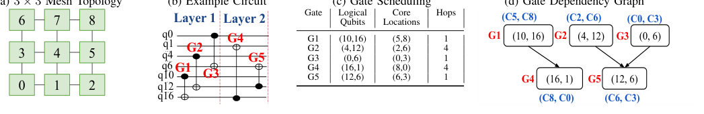
<figcaption class="paper-figure-caption"><b>Fig 2.</b> Fig. 2: Case study setup (a) 3 × 3 Mesh Topology. (b) Example quantum circuit with five two-qubit gates. (c) Table showing gate number, input qubits, their resident cores, and hop counts. (d) Dependency graph of the circuit gates.</figcaption>
</figure>
<figure class="paper-figure-card">
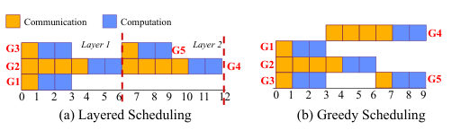
<figcaption class="paper-figure-caption"><b>Fig 3.</b> Fig. 3: Comparison of scheduling strategies: layered schedul- ing (makespan=12) versus greedy scheduling (makespan=9)</figcaption>
</figure>
<figure class="paper-figure-card">

<figcaption class="paper-figure-caption"><b>Fig 4.</b> Fig. 4: Comparison of various circuit scheduling with synthetic random circuits</figcaption>
</figure>
<figure class="paper-figure-card">

<figcaption class="paper-figure-caption"><b>Fig 5.</b> Fig. 4a shows the comparative study of makespan for syn- thetic random circuits across different hardware configurations. We can see that proposed greedy scheduling algorithm con- sistently achieves a lower makespan than layered scheduling. This improvement arises because the greedy approach exploits inter-layer parallelism, allowing gates to execute as soon as their dependencies and resources are available. In contrast, the layered scheduling ignores the fine-grained parallelism and fails to hide inter-core communication latency, which is particularly evident for the larger meshes. Fig. 4b shows the comparison of core utilization for the synthetic benchmarks. We can see that the greedy...</figcaption>
</figure>
</div>

<p><strong>Summary.</strong> This paper tackles the critical challenge of circuit scheduling on multi-core quantum processors by proposing a dependency-aware greedy algorithm. This method allows for fine-grained parallelism, significantly improving execution speed compared to simpler layer-based approaches. The results demonstrate that intelligent scheduling can drastically reduce makespan and better utilize hardware resources in these complex quantum systems.</p>
<p><strong>Why it may be interesting.</strong> While focused on classical scheduling algorithms for quantum hardware, the analysis of communication bottlenecks (teleportation latency) and resource management in a distributed quantum setting is highly relevant to understanding physical constraints in large-scale quantum computation architectures.</p>
<details>
<summary>Detailed structure</summary>
<p><strong>Main problem.</strong> The core problem is developing effective circuit scheduling algorithms for multi-core quantum systems to minimize the overall execution time (makespan).</p>
<p><strong>Main result.</strong> Dependency-aware greedy scheduling achieves substantial performance gains, showing an average 40% reduction in makespan compared to baseline layered scheduling on real benchmarks.</p>
<p><strong>Method.</strong> The authors propose a dependency-aware greedy scheduling strategy that schedules each gate at the earliest possible time based on resource and data dependencies, contrasting it with rigid layer-by-layer execution.</p>
<p><strong>Model / system.</strong> The system modeled is a multi-core quantum computing architecture utilizing an n x n 2D mesh topology. Inter-core operations rely on quantum teleportation over a Network-on-Chip (NoC).</p>
<p><strong>Key observables.</strong> Makespan ($    ext{T}<em ext_comm="ext{comm">{    ext{total}}$), Core Utilization, and Communication Overlap Ratio ($  ext{R}</em>$).}</p>
<p><strong>Important parameters / regimes.</strong> The communication delay is proportional to the number of hops ($H 	imes \lambda_{	ext{hop}}$), which is a critical bottleneck.</p>
<p><strong>Assumptions / limitations.</strong> The primary assumption addressed is that fine-grained parallelism can be exploited by overlapping computation and communication latency, overcoming limitations imposed by strict layered scheduling.</p>
<p><strong>Figures summary.</strong> Figures illustrate the multi-core architecture (NoC/Quantum Channel), compare makespans between layered vs. greedy scheduling using case studies, and show performance metrics across synthetic and real quantum circuits (QAOA, QFT).</p>
<p><strong>Paper structure.</strong> The paper first introduces the physical model and the limitations of baseline layered scheduling. It then details the proposed dependency-aware greedy algorithm, followed by extensive evaluation on both synthetic random circuits and established real benchmarks to validate performance gains.</p>
</details>
<details>
<summary>Abstract</summary>
<p>Multi-core quantum computing architectures have emerged as a promising solution to the qubit scalability limitations of monolithic NISQ devices. Quantum algorithms are expressed as quantum circuits composed of single- and two-qubit gates. However, circuit scheduling in multi-core quantum systems remains largely unexplored. Reducing overall execution time (makespan), increasing core utilization, and hiding communication latency behind computation depends on effective scheduling. In this paper, we first introduce a layered scheduling approach as a baseline where quantum gates within the same layer are executed in parallel, while layers themselves are executed sequentially. We then propose a greedy scheduling strategy which schedules each gate as soon as all its dependencies and required resources are available. This allows fine-grained parallelism across cores. Our evaluation shows that on real benchmarks, greedy scheduling achieves an average 40% reduction in makespan and improvement in core utilization. The results suggest that the use of intelligent circuit scheduling to exploit parallelism can greatly enhance the speed of circuit execution in multi-core quantum architectures.</p>
</details>
<p><sub><a href="#top">↑ back to top</a></sub></p>

<p><a id="paper-2607.00939"></a></p>
<h3 id="leveraging-llm-based-agentic-systems-to-generate-quantum-applications-for-test-optimization"><a href="http://arxiv.org/abs/2607.00939v1">Leveraging LLM-Based Agentic Systems to Generate Quantum Applications for Test Optimization</a></h3>
<p><strong>Authors:</strong> Ming Tao, Yuechen Li, Tao Yue, Man Zhang, Aitor Arrieta Marcos<br>
<strong>Type:</strong> experiment · <strong>Category:</strong> quantum information and computing · <strong>PDF:</strong> <a href="https://arxiv.org/pdf/2607.00939v1">https://arxiv.org/pdf/2607.00939v1</a><br>
<strong>Analysis basis:</strong> full PDF text, analyzed in chunks
<strong>Topic relevance:</strong> <code>analog quantum simulation</code> <strong>1/5</strong></p>
<div class="figure-strip-hint">↔ Scroll figures horizontally</div>
<div class="paper-figures-scroll">
<figure class="paper-figure-card">
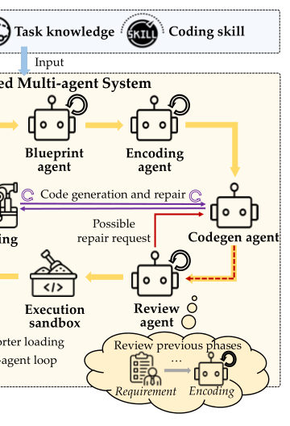
<figcaption class="paper-figure-caption"><b>Fig 1.</b> Figure 1: Overview of QPipe.</figcaption>
</figure>
<figure class="paper-figure-card">
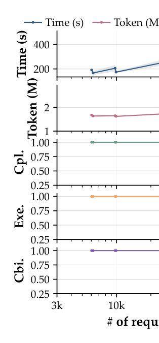
<figcaption class="paper-figure-caption"><b>Fig 2.</b> Figure 2: Relation between lengths of 20 requirements and RQ1 metrics.</figcaption>
</figure>
<figure class="paper-figure-card">
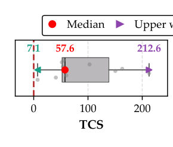
<figcaption class="paper-figure-caption"><b>Fig 3.</b> Figure 3: Distribution of QRR across successful generations of 10 TCS and 10 TCM requirements</figcaption>
</figure>
<figure class="paper-figure-card">

<figcaption class="paper-figure-caption"><b>Fig 4.</b> Figure 4: Pie charts for six patterns observed in 58 successful runs of QPipe</figcaption>
</figure>
<figure class="paper-figure-card">
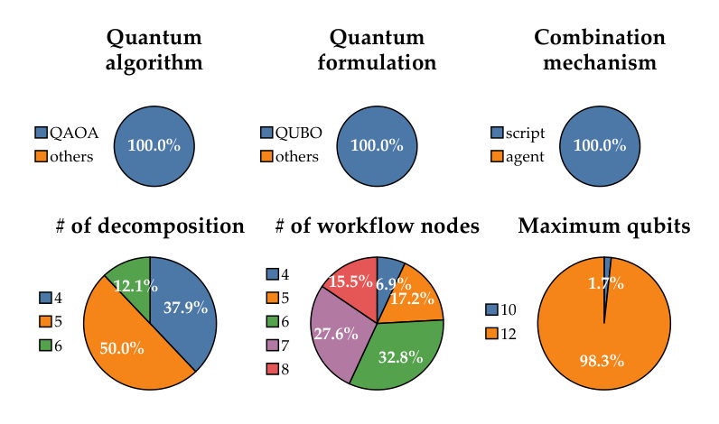
<figcaption class="paper-figure-caption"><b>Fig 5.</b> Figure 4 shows that the successful runs share a stable prompt-conditioned quantum core: all 58 use a QUBO formulation and QAOA. This pattern is not from predefined workflow settings or fixed model configurations. Rather, in each run, agents autonomously choose the formulation and algorithm, and all 58 successful runs hap- pen to converge on QUBO and QAOA for our target problems, even though we prompt Analysis Agent with exemplary algorithms previously used as solutions to SE optimization problems [40], like variational quantum eigensolver and Grover search, while no specified encoding candidates are offered for Encoding Agent. The fact that all successful runs use QUBO also does not mean...</figcaption>
</figure>
</div>

<p><strong>Summary.</strong> This paper introduces QPipe, an advanced LLM-based multi-agent system designed to automate the complex process of turning natural language requirements into working quantum applications for test optimization. By coordinating specialized agents—such as those handling encoding, code generation, and review—QPipe achieves high success rates in generating executable circuits that solve real-world problems better than classical benchmarks.</p>
<p><strong>Why it may be interesting.</strong> While focused on SE optimization rather than fundamental physics models, the reliance on QUBO/Ising formulations directly connects to quantum computational chemistry and materials science problems often modeled by Hamiltonians.</p>
<details>
<summary>Detailed structure</summary>
<p><strong>Main problem.</strong> The core problem is autonomously translating high-level, natural-language (NL) task requirements for Software Engineering optimization into fully executable quantum application workflows.</p>
<p><strong>Main result.</strong> The proposed QPipe agentic system successfully generates executable quantum applications that solve test optimization problems, with generated solutions outperforming a classical genetic algorithm baseline in most tested cases.</p>
<p><strong>Method.</strong> A multi-agent LLM architecture (QPipe) is employed to guide the process through specialized agents responsible for parsing requirements, formulating QUBO/Ising models, generating code, reviewing logic, and executing the quantum workflow.</p>
<p><strong>Model / system.</strong> The system operates on quantum computing principles, encoding optimization problems into QUBO or Ising Hamiltonians ($\min x^	op Qx$). The execution targets ideal simulators using frameworks like Qiskit to run algorithms such as QAOA.</p>
<p><strong>Key observables.</strong> Success rates for compilation (100%) and application execution (96.7%); solution quality measured by the QUBO-value reduction ratio (QRR) compared to a GA baseline; generation cost in seconds and tokens.</p>
<p><strong>Important parameters / regimes.</strong> The system manages resource constraints like qubit budgets, often decomposing large problems into smaller, manageable subproblems for sequential processing.</p>
<p><strong>Assumptions / limitations.</strong> The evaluation assumes ideal quantum simulators are used, ignoring real-world noise or device constraints. The success relies on the stability of formulation patterns (QUBO/Ising) and LLM reasoning capabilities.</p>
<p><strong>Figures summary.</strong> Figures illustrate the end-to-end workflow from NL input to executable output via specialized agents; pattern analysis shows successful runs consistently use QUBO formulations and QAOA algorithms, often decomposing problems into 4-6 subproblems.</p>
<p><strong>Paper structure.</strong> The paper details the QPipe architecture, which involves sequential stages: requirement parsing $
ightarrow$ quantum suitability analysis $
ightarrow$ workflow planning/encoding $
ightarrow$ code generation $
ightarrow$ multi-agent review $
ightarrow$ execution sandbox $
ightarrow$ result combination and verification.</p>
</details>
<details>
<summary>Abstract</summary>
<p>Quantum computing is increasingly explored for software engineering (SE) optimization, but translating natural-language (NL) task-level requirements into executable quantum applications still demands substantial quantum and programming expertise. We present QPipe, a large language model (LLM)-based multi-agent architecture that autonomously turns NL requirements into traceable quantum-application workflows through specialized agents for requirement parsing, formulation, code generation, review, execution, and verification. We evaluate QPipe on 20 NL requirements, each associated with a real-world benchmark and a test-optimization problem. QPipe successfully completes the key stages of quantum-application generation across requirements, achieving average rates of 100% for code compilation and 96.7% for application execution and final-result combination, with average generation costs of 260.1 seconds and 1.89M tokens per requirement. Among the generated quantum applications that execute successfully, the returned solutions outperform the offline genetic algorithm baseline in most cases. Ablation results further show that QPipe's advantage depends on retaining code-generation skills, task knowledge, review feedback, and multi-agent decomposition. These results indicate that agentic coordination can support generation of executable quantum applications for tackling test optimization problems from real-world benchmarks.</p>
</details>
<p><sub><a href="#top">↑ back to top</a></sub></p>

<p><a id="paper-2607.00765"></a></p>
<h3 id="resilient-math911math32-superconductivity-in-topological-semimetal-yptbi"><a href="http://arxiv.org/abs/2607.00765v1">Resilient $j$=3/2 superconductivity in topological semimetal YPtBi</a></h3>
<p><strong>Authors:</strong> Prathum Saraf, Nicholas A. Crombie, Rahul Sharma, Jared Z. Dans, Danila Sokratov, Carsyn L. Mueller, Ram Kumar, Hyunsoo Kim, Connor Roncaioli, Winslow Weiss, David Graf, Chandra Shekhar, Claudia Felser, Johnpierre Paglione<br>
<strong>Type:</strong> experiment · <strong>Category:</strong> strongly correlated electrons · <strong>PDF:</strong> <a href="https://arxiv.org/pdf/2607.00765v1">https://arxiv.org/pdf/2607.00765v1</a><br>
<strong>Analysis basis:</strong> full PDF text, analyzed in chunks
<strong>Topic relevance:</strong> <code>Kondo &amp; dissipative impurity</code> <strong>1/5</strong></p>
<div class="figure-strip-hint">↔ Scroll figures horizontally</div>
<div class="paper-figures-scroll">
<figure class="paper-figure-card">

<figcaption class="paper-figure-caption"><b>Fig 1.</b> FIG. 1. Variation of transport behavior of YPtBi with disorder, purity and charge doping. (a) and (b) Normalized resistivity and Hall resistivity of the various types of YPtBi grown respectively. Panel (a) shows data for Y0.997Ca0.003PtBi and Y0.52Nd0.48PtBi, while panel (b) show data for Y0.991Ca0.009PtBi and Y0.80Nd0.20PtBi. (c) Plot of 1/RRR vs residual resistivity indicating a change in the residual resistivity in the samples as opposed to room temperature resistivity. (d) Carrier density of various samples as a function of 1/RRR. Filled symbols are quantities measured with Hall and open symbols are measured with quantum oscillations.</figcaption>
</figure>
<figure class="paper-figure-card">
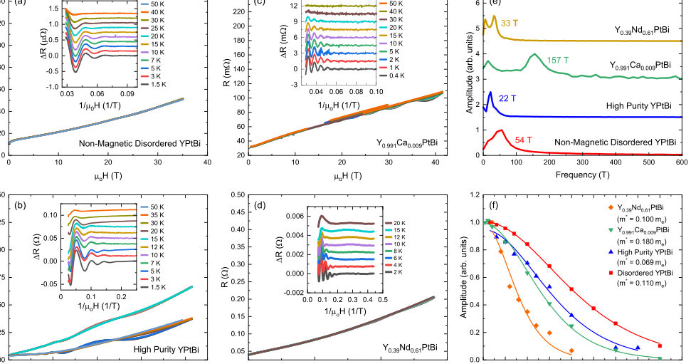
<figcaption class="paper-figure-caption"><b>Fig 2.</b> FIG. 2. Quantum oscillations in chemically tuned YPtBi. (a) - (d) Raw data of resistance vs magnetic field of disordered, high purity, Ca doped samples and (Y,Nd)PtBi respectively. Inset shows subtracted resistance curves offset to show the oscillations more clearly. (e) Fast Fourier transform of the oscillations showing changes in frequency of the four types of YPtBi. (f) Lifshitz-Kosevich fits (lines) of the temperature dependence of the amplitude of oscillations which is used to extract the effective mass.</figcaption>
</figure>
<figure class="paper-figure-card">
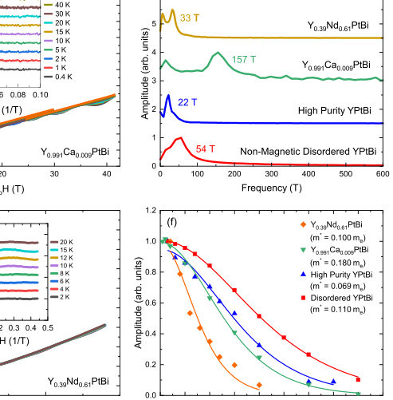
<figcaption class="paper-figure-caption"><b>Fig 3.</b> Fig. 2(a) presents the weaker quantum oscillations observed in disordered samples. Although the oscilla- tions are less prominent due to increased scattering, the background-subtracted oscillatory component is indeed periodic in 1/µ◦H, as shown in the inset. The FFT in Fig. 2(e) reveals a peak at F ≈54 T, similar to that of YPtBi. The extracted effective mass is m∗= 0.11me matching that of YPtBi. These observations suggest that while disorder suppresses the quantum oscillation ampli- tude by enhancing scattering, it does not significantly shift the Fermi level or alter the carrier density, consis- tent with the Hall data described above.</figcaption>
</figure>
<figure class="paper-figure-card">
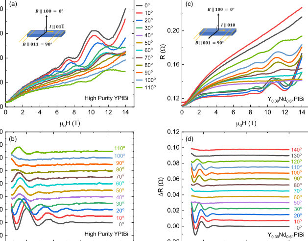
<figcaption class="paper-figure-caption"><b>Fig 4.</b> FIG. 3. Angle-dependent probe of j=3/2 Fermi surface in YPtBi. Rotation measurements on the high purity and (Y,Nd)PtBi samples. (a,c) Raw data at various angles. Inset shows the rotation axis of the field along the principal axes. (b,d) Subtracted data offset to show the oscillations at various angles clearly showing a suppression of amplitude around to 011 axis for both samples.</figcaption>
</figure>
<figure class="paper-figure-card">

<figcaption class="paper-figure-caption"><b>Fig 5.</b> FIG. 4. Insensitivity of j=3/2 superconductivity to disorder and carrier density tuning. (a) Normalized resistivity curves for the samples clearly showing no variation in transition temperature. (b) Various samples measured in resistivity showing no change in Tc due to disorder. (c) Tc vs carrier density showing no change in the transition temperature.</figcaption>
</figure>
</div>

<p><strong>Summary.</strong> The research investigates the robust superconductivity in the topological semimetal YPtBi. By measuring transport properties across samples with varying levels of disorder and carrier concentration, the authors find that $T_c$ remains remarkably stable. This resilience suggests that the superconducting transition is governed by phase stiffness rather than conventional pairing strength, highlighting a new form of protection in high-spin superconductors.</p>
<p><strong>Why it may be interesting.</strong> This work provides experimental evidence for superconductivity whose critical temperature is insensitive to disorder and doping, challenging standard BCS predictions and pointing towards exotic pairing mechanisms relevant to strongly correlated topological materials.</p>
<details>
<summary>Detailed structure</summary>
<p><strong>Main problem.</strong> To investigate the resilience of $j=3/2$ superconductivity in the topological semimetal YPtBi against various perturbations, including magnetic and nonmagnetic disorder and changes in carrier density.</p>
<p><strong>Main result.</strong> The superconducting critical temperature ($T_c$) exhibits remarkable robustness across large variations in disorder and doping levels, suggesting that the transition is governed by phase stiffness rather than conventional pair formation amplitude.</p>
<p><strong>Method.</strong> A combination of electrical transport measurements (resistivity, Hall effect) and quantum oscillation measurements (Shubnikov-de Haas oscillations) were performed on various sample types.</p>
<p><strong>Model / system.</strong> The study focuses on the topological semimetal YPtBi, which possesses strong spin-orbit coupling leading to a $j=3/2$ quasiparticle manifold near the Fermi level. The system is tested by introducing controlled disorder (Au) and varying carrier concentration via doping ($ ext{Ca},    ext{Nd}$).</p>
<p><strong>Key observables.</strong> Superconducting critical temperature ($T_c$), residual resistivity ratio, quantum oscillation frequency ($F$) and effective mass ($m^*$), and Hall coefficient derived carrier density.</p>
<p><strong>Important parameters / regimes.</strong> Disorder levels (varying $
ho_0$), carrier densities ($n$ spanning orders of magnitude), and magnetic fields up to 41.5 T.</p>
<p><strong>Assumptions / limitations.</strong> The robustness suggests the pairing mechanism is protected, potentially limited by superfluid phase stiffness rather than pair formation energy.</p>
<p><strong>Figures summary.</strong> Figures illustrate transport behavior changes across different samples (Fig. 1); quantum oscillation analysis confirms periodicity and allows extraction of $m^*$ and $F$ (Fig. 2); angular measurements confirm the $j=3/2$ Fermi surface structure (Fig. 3); and a summary figure shows $T_c$'s insensitivity to disorder and doping (Fig. 4).</p>
<p><strong>Paper structure.</strong> The paper systematically characterizes multiple sample types (pure, disordered, doped) using transport measurements, analyzes quantum oscillations to map the Fermi surface and electronic structure changes, and culminates in arguing that the observed $T_c$ robustness points toward a phase stiffness-limited superconducting mechanism.</p>
</details>
<details>
<summary>Abstract</summary>
<p>Cooper pairing in most of the known fermionic superfluids occurs via spin-1/2 quasiparticle interactions that lead to spin-singlet or spin-triplet pairing. In the topological semimetal YPtBi, strong spin-orbit coupling results in a band inversion between highly symmetric $s$- and $p$-like electronic bands and a degeneracy at the $Γ$ point that ensures the manifold of $j$=3/2 quasiparticle states thrive near the Fermi level, where superconducting pairing occurs. Here we study the effects of magnetic and nonmagnetic disorder and carrier density on this exotic superconducting pairing state. By varying levels of disorder and carrier densities by nearly two and three orders of magnitude, respectively, we show that the superconducting critical temperature of YPtBi has a remarkable robustness, with little variation across this span. Our results suggest that superconductivity in YPtBi may reside in a regime where phase stiffness, rather than pair formation, governs the transition temperature. The insensitivity of Cooper pairing to dramatic changes in quasiparticle environment in a $j$=3/2 superconductor highlights a new form of protection realized in topological high-spin superconductors.</p>
</details>
<p><sub><a href="#top">↑ back to top</a></sub></p>

<p><a id="paper-2607.00809"></a></p>
<h3 id="vanadium-superconducting-microwave-resonators-on-silicon-wafers"><a href="http://arxiv.org/abs/2607.00809v1">Vanadium superconducting microwave resonators on silicon wafers</a></h3>
<p><strong>Authors:</strong> Y. Fujita, Y. Urade, Y. Hibino, M. Tsujimoto, K. Inomata, G. Fujii, W. Mizubayashi<br>
<strong>Type:</strong> experiment · <strong>Category:</strong> other · <strong>PDF:</strong> <a href="https://arxiv.org/pdf/2607.00809v1">https://arxiv.org/pdf/2607.00809v1</a><br>
<strong>Analysis basis:</strong> full PDF text, analyzed in chunks
<strong>Topic relevance:</strong> <code>QC/QI experiment</code> <strong>1/5</strong></p>
<div class="figure-strip-hint">↔ Scroll figures horizontally</div>
<div class="paper-figures-scroll">
<figure class="paper-figure-card">

<figcaption class="paper-figure-caption"><b>Fig 1.</b> FIG. 1. (a) ω-2θ XRD profiles for Si/Nb/V and Si/V samples obtained by setting the scattering</figcaption>
</figure>
<figure class="paper-figure-card">

<figcaption class="paper-figure-caption"><b>Fig 2.</b> Figure 1(a) shows the out-of-plane XRD profiles of ω-2θ scans from the ⟨001⟩directions of</figcaption>
</figure>
<figure class="paper-figure-card">

<figcaption class="paper-figure-caption"><b>Fig 3.</b> Fig. 1(a). Note that the small V 001 peak was not always reproduced even when the film</figcaption>
</figure>
<figure class="paper-figure-card">
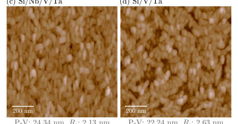
<figcaption class="paper-figure-caption"><b>Fig 4.</b> FIG. 2. AFM topographic images of the surfaces of (a) Si/Nb/V, (b) Si/V, (c) Si/Nb/V/Ta, and</figcaption>
</figure>
<figure class="paper-figure-card">
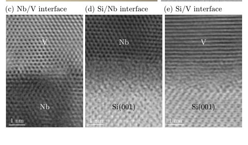
<figcaption class="paper-figure-caption"><b>Fig 5.</b> FIG. 4. (a) Optical micrograph of a CPW resonator chip with a Si/Nb/V/Ta structure. (b) Cross-</figcaption>
</figure>
</div>

<p><strong>Summary.</strong> This experimental study investigates how modifying the structure of Vanadium superconducting films using buffer and capping layers affects their microwave loss in resonators. By correlating structural data with $Q_{	ext{int}}$ measurements, the authors pinpoint non-TLS losses originating from surface oxides or hydrides as a key limitation for quantum circuit development.</p>
<p><strong>Why it may be interesting.</strong> The work directly addresses the practical challenge of material engineering for quantum devices by linking microscopic defects (oxides, grain boundaries) to macroscopic performance metrics ($Q_{int}$), which is crucial for designing reliable superconducting circuits.</p>
<details>
<summary>Detailed structure</summary>
<p><strong>Main problem.</strong> The study aims to understand how material properties, particularly surface chemistry and structural quality, influence microwave losses in superconducting Vanadium (V) films used in quantum circuits.</p>
<p><strong>Main result.</strong> While buffer layers improve crystal structure, the presence of V oxides or hydrides at grain boundaries appears to be a dominant source of non-TLS loss, which can be mitigated by capping layers like Tantalum (Ta).</p>
<p><strong>Method.</strong> The research combines structural characterization (XRD, AFM) with electrical and microwave measurements ($Q_{int}$ vs. $\langle n_{	ext{ph}} 
angle$) and surface analysis (XPS, EDS).</p>
<p><strong>Model / system.</strong> The physical system is a superconducting resonator built from V films on Si wafers, modified by Nb buffer layers and Ta capping layers. Loss mechanisms are analyzed using the photon-number dependence of the internal quality factor ($Q_{int}$).</p>
<p><strong>Key observables.</strong> Internal quality factor ($Q_{	ext{int}}$), non-TLS loss ($\delta_{	ext{other}}$), lattice orientation uniformity (XRD FWHM), and surface oxidation states (XPS).</p>
<p><strong>Important parameters / regimes.</strong> Photon number ($\langle n_{	ext{ph}} 
angle$), temperature (down to 10 mK), film thickness, and buffer/capping layer materials (Nb, Ta).</p>
<p><strong>Assumptions / limitations.</strong> The microwave loss can be modeled by separating contributions into Two-Level System (TLS) losses and photon-number-independent non-TLS losses.</p>
<p><strong>Figures summary.</strong> Figures show XRD profiles confirming lattice coherence enhancement with Nb buffers; AFM images detail surface roughness changes; $Q_{int}$ vs. $\langle n_{	ext{ph}} 
angle$ plots analyze loss mechanisms, and XPS spectra map out various V and Ta oxide states.</p>
<p><strong>Paper structure.</strong> The paper progresses from structural characterization (Nb buffer effect) to electrical property analysis ($    ext{Tc}$, $ ext{RRR}$), then focuses on microwave loss modeling ($Q_{int}$ vs. $\langle n_{	ext{ph}} 
angle$), and finally correlates these losses with detailed surface chemistry findings (oxides/hydrides).</p>
</details>
<details>
<summary>Abstract</summary>
<p>Understanding the correlation between material properties and microwave losses in superconducting films is a crucial subject for developing low-loss materials for quantum circuits. We focus on vanadium (V) as a novel material for superconducting quantum devices and discuss loss in V films in relation to their structural properties. Using a sputtering method, we grow four V-film structures on (001)-oriented Si wafers, employing Nb and Ta as the buffer and capping layer materials, respectively: Nb/V/Ta, Nb/V, V/Ta, and V. X-ray diffraction and atomic force microscopy reveal that the V films grown on the Nb buffer layers have higher uniformity of lattice orientation and smaller grain size than that directly grown on the Si wafer. Coplanar waveguide resonators are fabricated from the four V-film structures, and averaged photon number ($\langle n_{\rm ph} \rangle$) dependences of internal quality factor ($Q_{\rm int}$) are obtained by performing microwave measurements. By analyzing the obtained $Q_{\rm int}$ vs $\langle n_{\rm ph} \rangle$, it is found that loss at the V surface is dominated by $\langle n_{\rm ph} \rangle$-independent non-two-level-system (non-TLS) losses, which can be mitigated by introducing the Ta capping layer. Furthermore, the V films on the Nb buffer layers exhibit lower $Q_{\rm int}$ in the $\langle n_{\rm ph} \rangle$ range from 10$^{0}$ to 10$^{6}$ and higher non-TLS loss than that directly grown on Si wafers, even though the former has higher lattice-orientation uniformity than the latter. Origins of these trends might be relevant to V oxides, of which presence at surfaces and grain boundaries in bulk regions in the V resonators is suggested by energy dispersive X-ray spectroscopy and X-ray photoelectron spectroscopy, and/or V hydrides.</p>
</details>
<p><sub><a href="#top">↑ back to top</a></sub></p>

<p><a id="paper-2607.00340"></a></p>
<h3 id="wallis-products-from-the-four-dimensional-singular-harmonic-oscillator"><a href="http://arxiv.org/abs/2607.00340v1">Wallis Products from the Four-Dimensional Singular Harmonic Oscillator</a></h3>
<p><strong>Authors:</strong> Bin Ye, Ruitao Chen, Lei Yin<br>
<strong>Type:</strong> theory · <strong>Category:</strong> other · <strong>PDF:</strong> <a href="https://arxiv.org/pdf/2607.00340v1">https://arxiv.org/pdf/2607.00340v1</a><br>
<strong>Analysis basis:</strong> full PDF text, analyzed in chunks
<strong>Topic relevance:</strong> <code>Keldysh / 2PI / non-Gaussian methods</code> <strong>1/5</strong></p>
<div class="figure-strip-hint">↔ Scroll figures horizontally</div>
<div class="paper-figures-scroll">
<figure class="paper-figure-card">
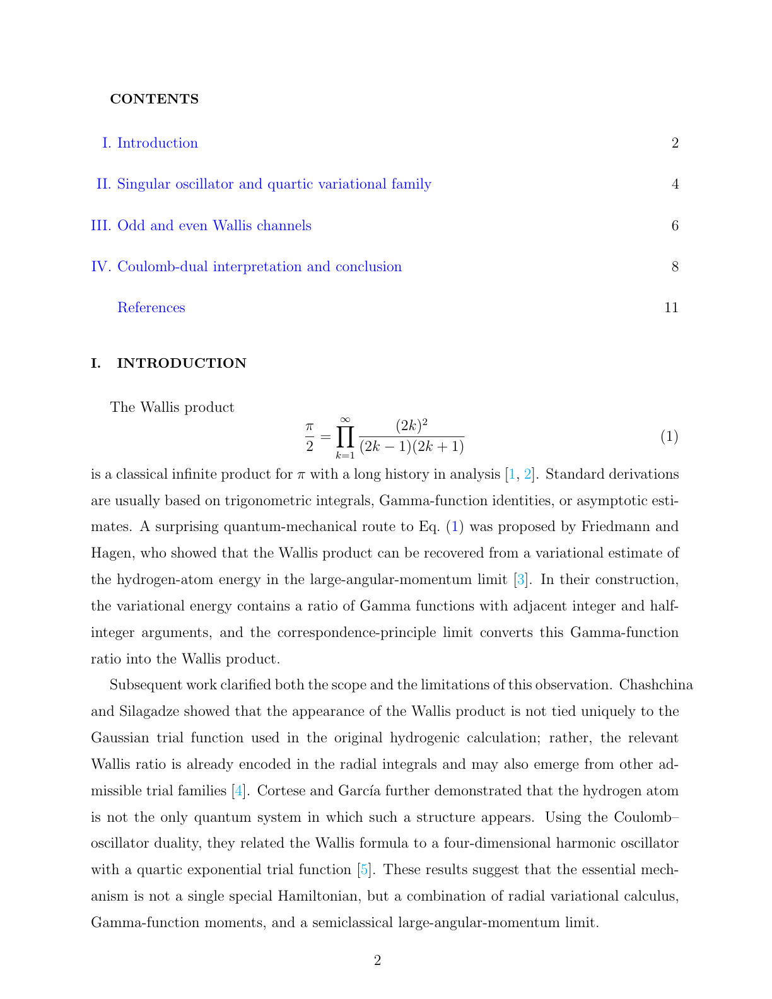
<figcaption class="paper-figure-caption"><b>Fig 1.</b> Low-resolution page preview, page 2</figcaption>
</figure>
<figure class="paper-figure-card">

<figcaption class="paper-figure-caption"><b>Fig 2.</b> Low-resolution page preview, page 3</figcaption>
</figure>
<figure class="paper-figure-card">

<figcaption class="paper-figure-caption"><b>Fig 3.</b> Low-resolution page preview, page 4</figcaption>
</figure>
<figure class="paper-figure-card">
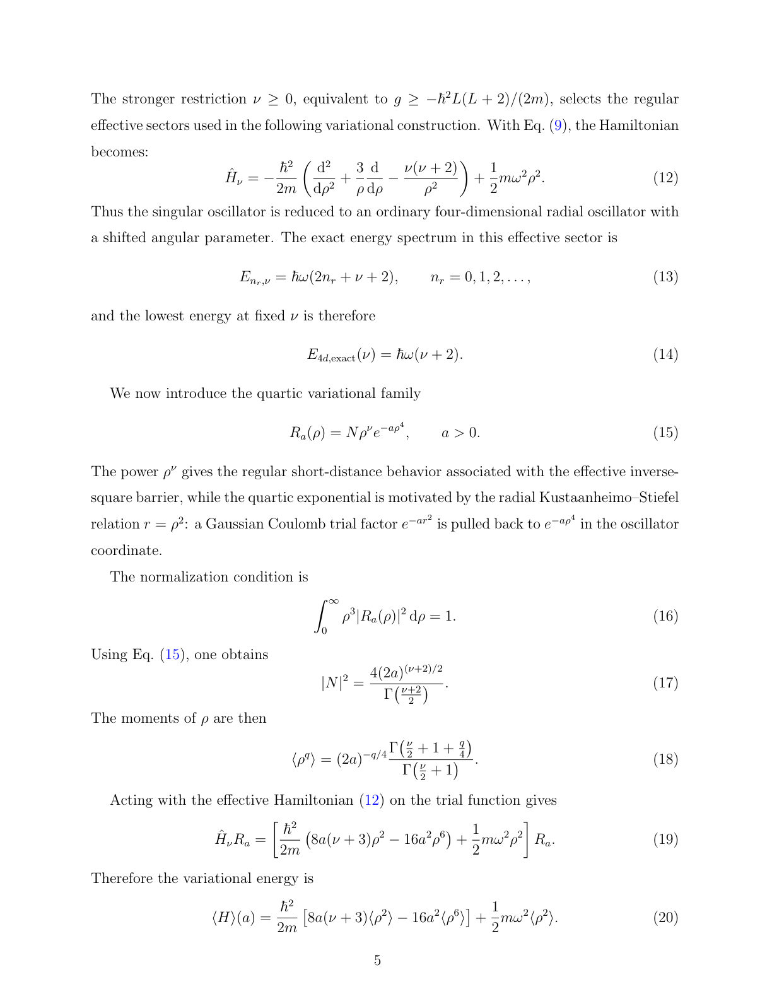
<figcaption class="paper-figure-caption"><b>Fig 4.</b> Low-resolution page preview, page 5</figcaption>
</figure>
<figure class="paper-figure-card">

<figcaption class="paper-figure-caption"><b>Fig 5.</b> Low-resolution page preview, page 6</figcaption>
</figure>
</div>

<p><strong>Summary.</strong> This paper uses the framework of the four-dimensional singular harmonic oscillator to provide a novel derivation for the Wallis product and its reciprocal. By analyzing how the variational energy ratio behaves for odd versus even effective angular parameters, the authors show that quantum mechanics unifies these two distinct mathematical constants. This connects fundamental number theory results to radial quantum dynamics.</p>
<p><strong>Why it may be interesting.</strong> While not directly about AMO systems like cold atoms or trapped ions, the use of quantum mechanics (variational methods on radial equations) to derive fundamental mathematical constants is a powerful demonstration of physical modeling in pure mathematics.</p>
<details>
<summary>Detailed structure</summary>
<p><strong>Main problem.</strong> The paper derives the mathematical identities of the Wallis product and its reciprocal using a quantum mechanical variational approach.</p>
<p><strong>Main result.</strong> It demonstrates that the singular harmonic oscillator provides a unified framework from which both the standard and reciprocal Wallis products can be derived by examining odd and even sequences of an effective angular parameter $\nu$.</p>
<p><strong>Method.</strong> The core method is a variational calculation applied to the radial Schrödinger equation for the 4D singular harmonic oscillator, utilizing specific trial wave functions.</p>
<p><strong>Model / system.</strong> The model is the four-dimensional singular harmonic oscillator with an inverse-square interaction term. The analysis leverages the Kustaanheimo--Stiefel relation connecting it to the 3D Coulomb problem.</p>
<p><strong>Key observables.</strong> The accuracy ratio $R_{4d}(\nu)$ derived from the variational energy, which approaches unity in the large-$\nu$ limit.</p>
<p><strong>Important parameters / regimes.</strong> The effective angular parameter $\nu$, and its specific sequences: odd ($\nu=2n-1$) and even ($\nu=2n$).</p>
<p><strong>Assumptions / limitations.</strong> The derivation relies on the validity of the variational upper bound and asymptotic approximations for Gamma functions in the large-$\nu$ limit.</p>
<p><strong>Paper structure.</strong> The paper establishes the Hamiltonian, applies the variational method using a quartic trial family, calculates the energy ratio $R_{4d}(\nu)$, and then analyzes the limits for odd and even $\nu$ to recover the known infinite products.</p>
</details>
<details>
<summary>Abstract</summary>
<p>We present a variational derivation of the Wallis product and its reciprocal from the four-dimensional singular harmonic oscillator. The inverse-square interaction is absorbed into an effective angular parameter $ν$, so that the lowest exact energy in a fixed sector is $E_{4d,\mathrm{exact}}=\hbarω(ν+2)$. Motivated by the radial Kustaanheimo--Stiefel relation $r=ρ^2$ between the four-dimensional oscillator and the three-dimensional Coulomb problem, we use the quartic trial family $R_a(ρ)=Nρ^νe^{-aρ^4}$. The minimized variational energy yields an accuracy ratio governed by adjacent Gamma functions. In the large-$ν$ semiclassical limit, this ratio approaches unity. Restricting $ν$ to the odd sequence $ν=2n-1$ gives the standard Wallis product, whereas the even sequence $ν=2n$ gives its reciprocal form. The Coulomb-dual interpretation further relates the two branches to integer and half-integer effective angular sectors in the dual Coulomb/MICZ description. The result shows that Wallis-type infinite products persist under an inverse-square deformation of the oscillator and arise from a common Gamma-function structure in radial variational dynamics.</p>
</details>
<p><sub><a href="#top">↑ back to top</a></sub></p>
<h2 id="other-papers-6">Other papers (6)</h2>
<p><em>Papers from primary archives without highlighted authors or any topic match. Click to expand.</em></p>
<details>
<summary>Show other papers</summary>

<p><a id="paper-2607.00102"></a></p>
<h3 id="a-differential-derivation-of-the-obara-saika-relation-for-gaussian-electron-repulsion-integrals"><a href="http://arxiv.org/abs/2607.00102v1">A differential derivation of the Obara-Saika relation for Gaussian electron repulsion integrals</a></h3>
<p><strong>Authors:</strong> Charles C. Forgy, David A. Mazziotti<br>
<strong>Type:</strong> theory · <strong>Category:</strong> other · <strong>PDF:</strong> <a href="https://arxiv.org/pdf/2607.00102v1">https://arxiv.org/pdf/2607.00102v1</a><br>
<strong>Analysis basis:</strong> full PDF text, analyzed in chunks</p>
<div class="figure-strip-hint">↔ Scroll figures horizontally</div>
<div class="paper-figures-scroll">
<figure class="paper-figure-card">
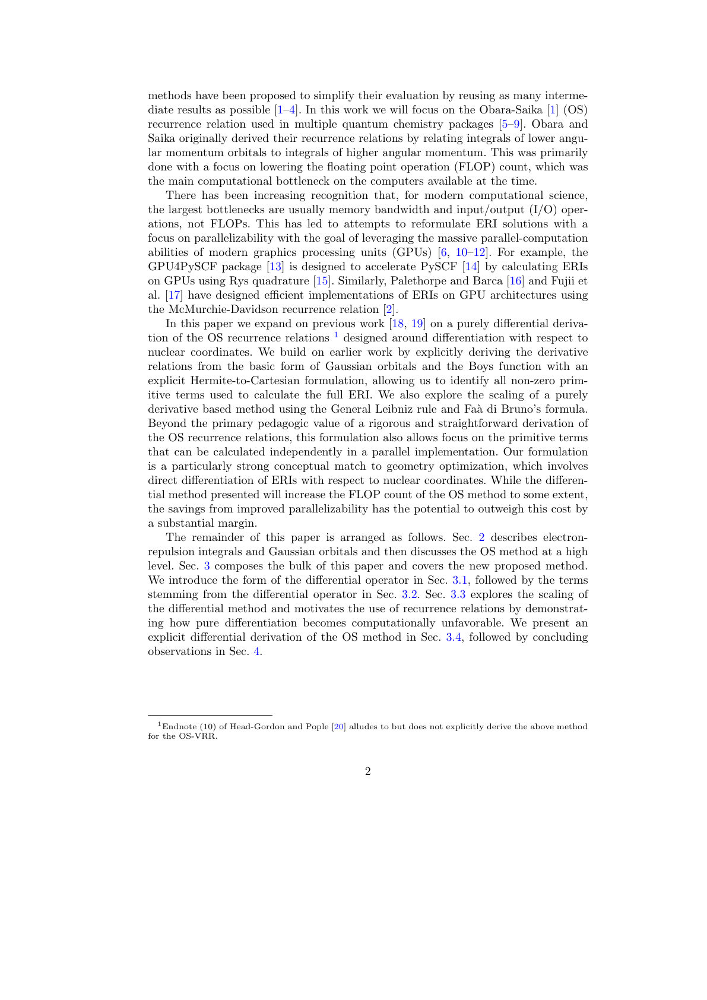
<figcaption class="paper-figure-caption"><b>Fig 1.</b> Low-resolution page preview, page 2</figcaption>
</figure>
<figure class="paper-figure-card">

<figcaption class="paper-figure-caption"><b>Fig 2.</b> Low-resolution page preview, page 3</figcaption>
</figure>
<figure class="paper-figure-card">

<figcaption class="paper-figure-caption"><b>Fig 3.</b> Low-resolution page preview, page 4</figcaption>
</figure>
<figure class="paper-figure-card">

<figcaption class="paper-figure-caption"><b>Fig 4.</b> Low-resolution page preview, page 5</figcaption>
</figure>
<figure class="paper-figure-card">
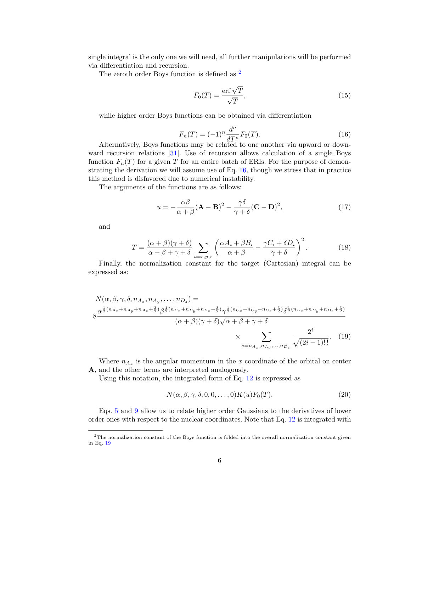
<figcaption class="paper-figure-caption"><b>Fig 5.</b> Low-resolution page preview, page 6</figcaption>
</figure>
</div>
<p><strong>Summary.</strong> This paper presents a novel, purely differential derivation of the Obara-Saika recurrence relation used to calculate electron repulsion integrals (ERIs) in quantum chemistry. By deriving these relations solely from the derivatives of Gaussian basis functions, the authors provide a self-contained and pedagogically valuable method. This new formulation is designed to expose independent primitive derivative terms, making the calculation highly suitable for modern parallel hardware like GPUs.</p>
<p><strong>Why it may be interesting.</strong> While focused on quantum chemistry integrals rather than AMO systems, the rigorous development of a computationally efficient, parallelizable mathematical framework for calculating complex multi-electron interactions is highly relevant to any field involving many-body electronic structure calculations.</p>
<details>
<summary>Detailed structure</summary>
<p><strong>Main problem.</strong> The core problem is developing a novel, rigorous derivation for calculating complex two-electron repulsion integrals (ERIs) required in quantum chemistry calculations.</p>
<p><strong>Main result.</strong> The authors successfully derive the Obara-Saika recurrence relation using only differential relations between Gaussian basis functions, yielding a hierarchical formulation of the integral calculation.</p>
<p><strong>Method.</strong> The method involves applying repeated differentiation operators ($\partial/\partial A_i$) to the ERI expressions and utilizing established mathematical identities (like Lemma 1) to build up higher-order integrals from lower ones.</p>
<p><strong>Model / system.</strong> The calculations are performed for electronic structure problems using Gaussian basis sets, specifically focusing on two-center four-orbital electron repulsion integrals ($\langle ss|ss 
angle$, etc.).</p>
<p><strong>Key observables.</strong> Electron Repulsion Integrals (ERIs), the Obara-Saika recurrence relation (OS-VRR), and independent primitive derivative quantities.</p>
<p><strong>Important parameters / regimes.</strong> Gaussian coefficients, nuclear coordinates ($A, B, C, D$), and angular momentum indices.</p>
<p><strong>Assumptions / limitations.</strong> The derivation relies on the mathematical validity of applying differential operators to Gaussian basis functions; numerical instability is noted as a practical limitation when using recursion for Boys functions.</p>
<p><strong>Figures summary.</strong> Not specified (Notes focus heavily on equations and derivations rather than figure descriptions).</p>
<p><strong>Paper structure.</strong> The paper progresses from establishing the need for ERI calculation, introducing the differential approach based on Gaussian derivatives, deriving recurrence relations step-by-step using operators, and finally comparing the resulting relation to the established OS method.</p>
</details>
<details>
<summary>Abstract</summary>
<p>The Obara-Saika (OS) method is one of the most widely used techniques in quantum chemistry for evaluating electron repulsion integrals (ERIs) via a set of recurrence relations that build higher angular momentum integrals from lower-order ones. The original derivation by Obara and Saika proceeded by directly relating integrals of differing angular momentum. In this work, we present a compact novel derivation of the OS vertical recurrence relation based solely on differential relations between Gaussian basis functions, expanding on a method suggested in earlier work. By explicitly deriving the required derivative expressions we identify all non-zero primitive terms contributing to the full ERI to develop a hierarchical formulation of the OS recursion relations. This approach has pedagogical value as a rigorous and self-contained derivation. Additionally, the resulting organization exposes independent primitive derivative quantities and may be useful for code generation and parallel implementations on modern GPU architectures.</p>
</details>
<p><sub><a href="#top">↑ back to top</a></sub></p>

<p><a id="paper-2607.00961"></a></p>
<h3 id="bridging-quantum-computing-paradigms-toward-semiconductor-yield-a-controlled-cv-versus-dv-comparison-on-wafer-map-defect-classification"><a href="http://arxiv.org/abs/2607.00961v1">Bridging Quantum Computing Paradigms toward Semiconductor Yield: A Controlled CV-versus-DV Comparison on Wafer-Map Defect Classification</a></h3>
<p><strong>Authors:</strong> Yeonhong Kim, Jonghyeok Im, Monu Nath Baitha, Kyoungsik Kim<br>
<strong>Type:</strong> both · <strong>Category:</strong> quantum information and computing · <strong>PDF:</strong> <a href="https://arxiv.org/pdf/2607.00961v1">https://arxiv.org/pdf/2607.00961v1</a><br>
<strong>Analysis basis:</strong> full PDF text, analyzed in chunks</p>
<div class="figure-strip-hint">↔ Scroll figures horizontally</div>
<div class="paper-figures-scroll">
<figure class="paper-figure-card">

<figcaption class="paper-figure-caption"><b>Fig 1.</b> Fig. 1 Controlled protocol and architectures - (a) shared-backbone protocol with three interchangeable heads; (b) CV-QNN</figcaption>
</figure>
<figure class="paper-figure-card">
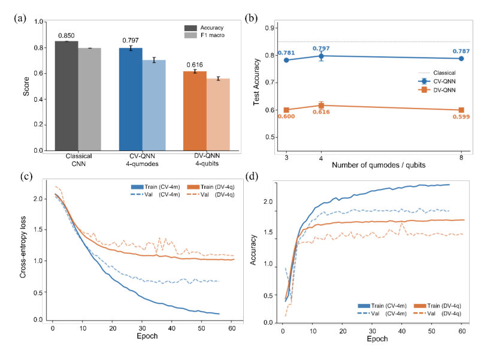
<figcaption class="paper-figure-caption"><b>Fig 2.</b> Fig. 2 Performance and training dynamics - (a) accuracy and macro-F1 for Classical, CV-4m, and DV-4q with quantum-</figcaption>
</figure>
<figure class="paper-figure-card">
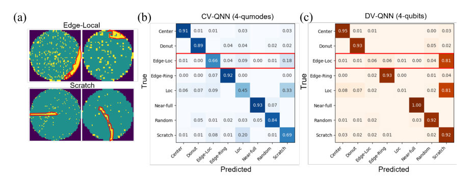
<figcaption class="paper-figure-caption"><b>Fig 3.</b> Fig. 3 Confusion matrices, CV-4m vs. DV-4q - (a) representative wafer maps from the Edge-Loc (top) and Scratch (bottom)</figcaption>
</figure>
<figure class="paper-figure-card">
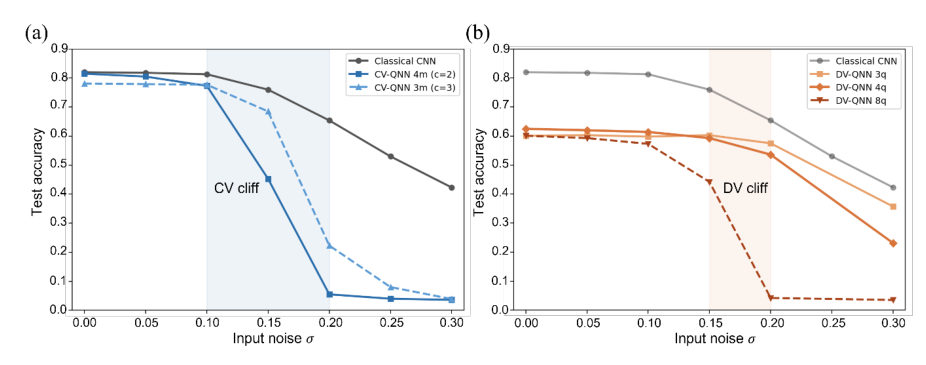
<figcaption class="paper-figure-caption"><b>Fig 4.</b> Fig. 4 Input-noise robustness - test accuracy under Gaussian input noise σ. (a) CV-QNN (4m, 3m) and the classical CNN: CV</figcaption>
</figure>
<figure class="paper-figure-card">
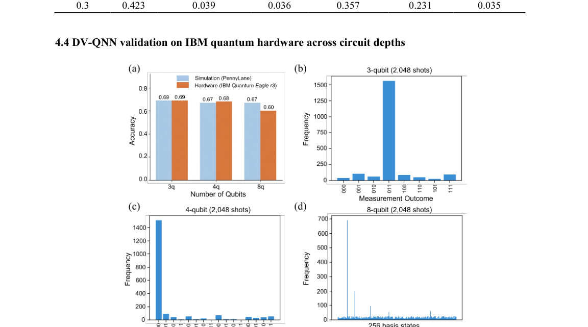
<figcaption class="paper-figure-caption"><b>Fig 5.</b> Fig. 5 IBM quantum hardware validation - (a) simulation vs. hardware accuracy for DV-QNN at three depths (ibm_yonsei,</figcaption>
</figure>
</div>
<p><strong>Summary.</strong> This work compares CV-QNNs against DV-QNNs for classifying semiconductor wafer defects using a controlled hybrid architecture. The results strongly indicate that CV approaches offer superior performance, especially when distinguishing subtle spatial defect patterns. This guides the choice of quantum paradigm for industrial AI acceleration.</p>
<p><strong>Why it may be interesting.</strong> While focused on ML application, the rigorous comparison between continuous vs. discrete encoding methods provides insights into the fundamental representational power limits of different quantum information processing models.</p>
<details>
<summary>Detailed structure</summary>
<p><strong>Main problem.</strong> The study compares Continuous-Variable (CV) versus Discrete-Variable (DV) quantum neural network paradigms to determine which is best suited for high-stakes wafer-map defect classification in semiconductor manufacturing.</p>
<p><strong>Main result.</strong> The CV head consistently outperforms the DV head, showing a significant advantage on spatially localized defects like Edge-Loc. This suggests structured continuous encoding is superior for this task.</p>
<p><strong>Method.</strong> A controlled evaluation protocol was used where only the quantum classification head (CV-QNN or DV-QNN) was varied while keeping the feature extraction CNN backbone identical.</p>
<p><strong>Model / system.</strong> The system involves classifying eight defect classes from a wafer map dataset (WM-811K). The models are hybrid, combining classical CNN features with quantum circuits operating on either continuous variables (CV) or discrete qubits (DV).</p>
<p><strong>Key observables.</strong> Classification accuracy and recall, particularly for the spatially structured 'Edge-Loc' class.</p>
<p><strong>Important parameters / regimes.</strong> Number of qumodes/qubits tested (3, 4, 8); input noise level ($\sigma$); circuit depth; feature vector dimension (512).</p>
<p><strong>Assumptions / limitations.</strong> The CV advantage is attributed to structured design and continuous phase-space encoding, not necessarily genuine non-Gaussianity at the tested cutoff ($d=2$).</p>
<p><strong>Figures summary.</strong> Figures show performance comparisons across different defect classes, noise robustness sweeps (CV vs DV), and depth-resolved hardware accuracy degradation.</p>
<p><strong>Paper structure.</strong> The paper establishes the problem context in semiconductor yield, details the controlled comparison setup (shared CNN backbone + interchangeable quantum heads), presents quantitative results showing CV superiority, diagnoses the physical limitations of DV circuits, and discusses implications for future quantum hardware design.</p>
</details>
<details>
<summary>Abstract</summary>
<p>Realizing quantum neural networks (QNNs) in industry requires knowing which quantum computing paradigm suits which task. Motivated by AI accelerators and high-bandwidth memory, where die stacking makes wafer-level defect screening central to yield, we study WM-811K wafer-map defect classification (eight classes), comparing the dominant paradigms, continuous-variable (CV) and discrete-variable (DV), under controlled conditions. To isolate the quantum circuit as the sole variable, a shared convolutional backbone (~4.3M parameters) feeds interchangeable heads (classical dense, CV-QNN, or DV-QNN) as the only structural difference; each quantum head is scaled over three sizes (3, 4, 8 qumodes/qubits). The CV head consistently outperforms the DV head: at four qumodes/qubits it reaches 79.7 +/- 1.8% accuracy versus 61.6 +/- 1.4%, a non-overlapping 18-point gap. The advantage is sharpest on the spatially localized Edge-Loc class, easily confused with Scratch, which CV recovers with recall 0.66 +/- 0.06 while DV fails at every size (&lt;=0.05), showing the structured CV layer better captures fine spatial distinctions between defect types. Training curves show the DV limitation is a representational-capacity ceiling, not an optimization failure; at the Fock cutoff used here (d = 2) the CV advantage reflects two intrinsic properties, a structured, neural-network-analogue layer and continuous phase-space encoding, not Hilbert-space dimensionality. On IBM hardware, DV accuracy holds at shallow depth, degrading only at the deepest circuit. Both quantum heads remain below the classical baseline (85.0%), but the controlled setting isolates where a structured head already helps and, as noise and scale improve, which paradigm can deliver practical advantage.</p>
</details>
<p><sub><a href="#top">↑ back to top</a></sub></p>

<p><a id="paper-2607.00698"></a></p>
<h3 id="quantum-machine-learning-models-for-graphs"><a href="http://arxiv.org/abs/2607.00698v1">Quantum machine learning models for graphs</a></h3>
<p><strong>Authors:</strong> Frédéric Sauvage, Pranav Kalidindi, Frederic Rapp, Martın Larocca<br>
<strong>Type:</strong> both · <strong>Category:</strong> quantum information and computing · <strong>PDF:</strong> <a href="https://arxiv.org/pdf/2607.00698v1">https://arxiv.org/pdf/2607.00698v1</a><br>
<strong>Analysis basis:</strong> full PDF text, analyzed in chunks</p>
<div class="figure-strip-hint">↔ Scroll figures horizontally</div>
<div class="paper-figures-scroll">
<figure class="paper-figure-card">
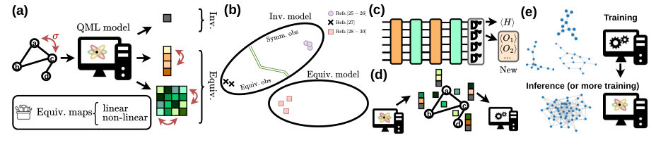
<figcaption class="paper-figure-caption"><b>Fig 1.</b> FIG. 1. (a) Toolbox for the construction of GQML models on graphs including the characterization of the relevant equivariant linear and non-linear maps. These are used for the encoding of n-node graphs into n-qubit quantum states and to identify measurements leading to invariant or equivariant models. This toolbox allows us to recover known models, identify new ones (b), and even render existing models more expressive at no cost (c). It also ensures integration with classical models through feature augmentation (d). The models obtained lend themselves to classical pre-training strategies that can reduce the training effort that needs to be performed on a quantum device and mitigate issues...</figcaption>
</figure>
<figure class="paper-figure-card">
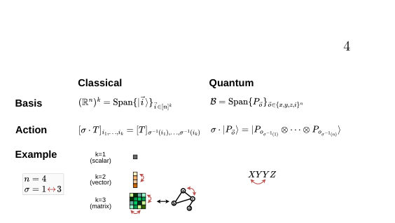
<figcaption class="paper-figure-caption"><b>Fig 2.</b> FIG. 2. Summary of the actions of Sn on the spaces of inter- ests both classical (order-k tensors) and quantum (operators) spaces. For each we provide the basis and action of a permu- tation, both formally and through visual examples.</figcaption>
</figure>
<figure class="paper-figure-card">
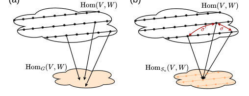
<figcaption class="paper-figure-caption"><b>Fig 3.</b> FIG. 3. (a) Symmetrizing (16) all elements of a basis of lin- ear maps Hom(V, W), one obtain a set of maps spanning the space of all equivariant maps HomG(V, W). (b) While in general this procedure is not scalable, this becomes tractable whenever the basis is closed under the action of the group symmetry (ie any element of the basis is mapped to another one under group action). This is the case for our choice of bases for Sn, and we use this strategy to identify all the equiv- ariant linear maps necessary to our models.</figcaption>
</figure>
<figure class="paper-figure-card">
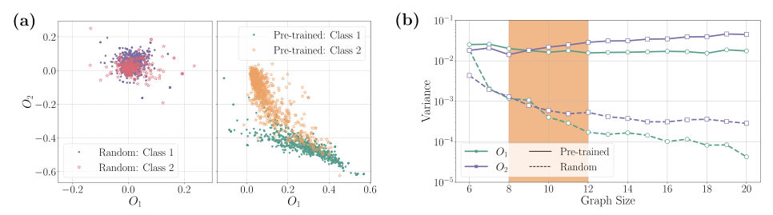
<figcaption class="paper-figure-caption"><b>Fig 4.</b> FIG. 4. Classical pre-training. The invariant QML model considered has encoding circuit defined through Eq. (45) and a 2-dimensional output given by the expectation values of 2 observables O1 and O2 (46). (a) For larger graphs (n = 14 to 20 nodes) than used for training (n = 8 to 12 nodes), outputs of the classically pre-trained model (right panel) are compared to output of the model initialized with random parameters (left panel). Each point correspond to one graph and has coordinates (x, y) being the observables expectation values. (b) For a more detailed comparison, the dispersion (quantified by the variance) of the output of the models are reported at varied system size and for the two...</figcaption>
</figure>
</div>
<p><strong>Summary.</strong> This paper establishes a comprehensive mathematical framework—a 'toolbox'—for designing Geometric Quantum Machine Learning (GQML) models tailored for graph structures. By rigorously enforcing symmetry constraints derived from the permutation group $S_n$, it provides systematic methods to construct, characterize, and improve the expressivity of quantum circuits used in quantum machine learning tasks.</p>
<p><strong>Why it may be interesting.</strong> This work provides a deep theoretical grounding in symmetry principles (group representation theory) applied directly to quantum computation models for structured data like graphs, which is highly relevant for designing physically constrained quantum circuits.</p>
<details>
<summary>Detailed structure</summary>
<p><strong>Main problem.</strong> The work aims to develop a rigorous framework for Geometric Quantum Machine Learning (GQML) models applied to graph problems, addressing the lack of a unifying design perspective compared to classical GML.</p>
<p><strong>Main result.</strong> A comprehensive 'toolbox' is provided to systematically characterize and construct equivariant quantum graph models, demonstrating benefits like natural integration with classical methods and enabling classical pre-training strategies.</p>
<p><strong>Method.</strong> The authors employ group theory (specifically the permutation group $S_n$) to define equivariance/invariance for quantum operators and maps, leading to a systematic basis construction via symmetrization (twirling).</p>
<p><strong>Model / system.</strong> The model involves encoding $n$-node graphs into $n$-qubit states ($
ho_\alpha(x)$) and utilizing general QML templates involving an encoding, unitary evolution ($U_   heta$), and measurement ($O$). The symmetry group acting on the system is $S_n$.</p>
<p><strong>Key observables.</strong> Equivariant observables (symmetric or equivariant tensors of Pauli strings), expectation values $  ext{Tr} [O_ heta 
ho_\alpha(x)]$, and classification outputs derived from these expectations.</p>
<p><strong>Important parameters / regimes.</strong> System size $n$ (number of nodes/qubits), circuit depth $L$, and the set of parameters $    heta$ governing the unitary evolution.</p>
<p><strong>Assumptions / limitations.</strong> The analysis relies on defining equivariance with respect to group actions ($S_n$) and assumes that model expressivity can be systematically increased by incorporating all compatible equivariant observables.</p>
<p><strong>Figures summary.</strong> Figure 1 illustrates the proposed toolbox for GQML construction, showing its use across encoding, measurement identification, and classical integration. Figure 2 summarizes $S_n$ actions on quantum spaces, while later figures show performance comparisons between pre-trained vs. random models.</p>
<p><strong>Paper structure.</strong> The paper builds from background theory (defining equivariance for QML) to building the toolbox by characterizing equivariant linear maps ($   ext{Hom}_{  ext{S}_n}(V, W)$), and finally applying this toolbox to construct and test specific GQML architectures.</p>
</details>
<details>
<summary>Abstract</summary>
<p>Geometric Machine Learning (GML) successes have been achieved through the thorough study and design of new equivariant neural networks. In comparison, geometric quantum machine learning (GQML) models lack such a detailed understanding and, despite already several proposals, a unifying perspective on their design remains elusive. In this work, we focus on GQML models for graph problems that showcase a lot of structure and still remain frontier in machine learning. For the case when n-node graphs are encoded in n-qubit states, we provide a comprehensive characterization of their constituents. Taken together, these furnish us with a toolbox for the design of quantum graph models, and we further probe its benefits including the natural integration with classical models, generalization of known GQML models (sometimes extending their expressivity at virtually no cost), and straightforward classical pre-training strategies. The latter two features are demonstrated in dedicated numerical experiments.</p>
</details>
<p><sub><a href="#top">↑ back to top</a></sub></p>

<p><a id="paper-2607.00575"></a></p>
<h3 id="reducing-quantum-resources-for-adapt-vqe-via-plateau-operator-elimination-and-correlated-mean-field-downfolding"><a href="http://arxiv.org/abs/2607.00575v1">Reducing quantum resources for ADAPT-VQE via plateau-operator elimination and correlated mean-field downfolding</a></h3>
<p><strong>Authors:</strong> Phuoc Minh Vo, Thai Cong Ngoc Vu, Thien Ngoc Tran, Hoang Thanh Nguyen, Lan Nguyen Tran<br>
<strong>Type:</strong> theory · <strong>Category:</strong> strongly correlated electrons · <strong>PDF:</strong> <a href="https://arxiv.org/pdf/2607.00575v1">https://arxiv.org/pdf/2607.00575v1</a><br>
<strong>Analysis basis:</strong> full PDF text, analyzed in chunks</p>
<div class="figure-strip-hint">↔ Scroll figures horizontally</div>
<div class="paper-figures-scroll">
<figure class="paper-figure-card">

<figcaption class="paper-figure-caption"><b>Fig 1.</b> FIG. 1: The plateau-operator elimination is incorporated into the original ADAPT-VQE workflow. After the classical optimization, the elimination scheme is applied to remove operators with vanishing parameters.</figcaption>
</figure>
<figure class="paper-figure-card">

<figcaption class="paper-figure-caption"><b>Fig 2.</b> FIG. 2: Gradient norm convergence for the hydrogen chain at r = 2.25 ˚A (left), 2.55 ˚A (middle), and 2.85 ˚A (right). There are three thresholds of elimination, at which the pool is restored: ϕ = 20% (orange), 22% (purple), and 25% (pink). The horizontal green line indicates the convergence threshold ϵ = 10−4.</figcaption>
</figure>
<figure class="paper-figure-card">
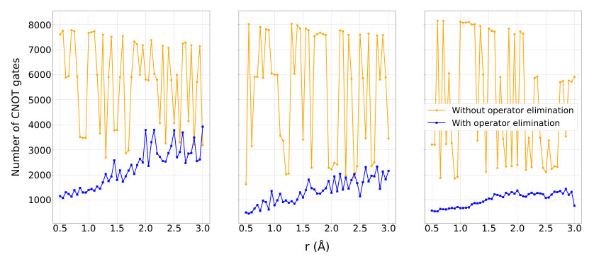
<figcaption class="paper-figure-caption"><b>Fig 3.</b> FIG. 3: CNOT gate counts for ADAPT-VQE with and without operator elimination at different bond lengths of H6 chain, H6 ring, and H6 lattice.</figcaption>
</figure>
<figure class="paper-figure-card">
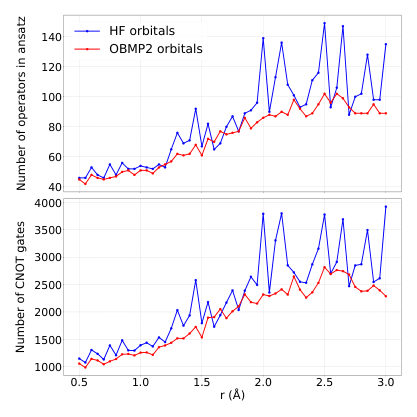
<figcaption class="paper-figure-caption"><b>Fig 4.</b> FIG. 4: Number of operators and number of CNOT gates for ADAPT-VQE with the elimination scheme using different orbital bases (HF and OBMP2) at various bond lengths of H6 chain.</figcaption>
</figure>
<figure class="paper-figure-card">
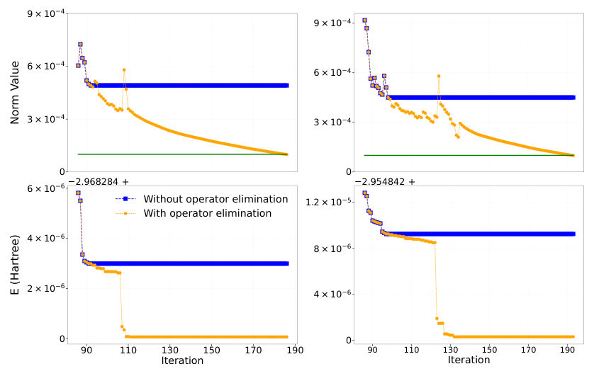
<figcaption class="paper-figure-caption"><b>Fig 5.</b> FIG. 5: Convergence of the gradient norm and energy with respect to iterations for r = 2.25 and 2.45 ˚A of H6 chain.</figcaption>
</figure>
</div>
<p><strong>Summary.</strong> The paper presents an advanced hybrid quantum algorithm combining operator elimination with a one-body downfolding framework (OBDF) to enhance ADAPT-VQE for electronic structure calculations. By pruning redundant operators and incorporating external correlation effects, the method achieves faster convergence and higher accuracy compared to standard approaches on molecular models like H6 and N2.</p>
<p><strong>Why it may be interesting.</strong> This work directly addresses the practical limitations of applying quantum algorithms (like VQE) to complex many-body Hamiltonians, providing concrete algorithmic improvements for resource efficiency and systematic error reduction in correlated electron simulations.</p>
<details>
<summary>Detailed structure</summary>
<p><strong>Main problem.</strong> The primary goal is to reduce quantum resources and improve convergence stability for ADAPT-VQE, a method used for electronic structure calculations on near-term quantum devices.</p>
<p><strong>Main result.</strong> Operator elimination significantly reduces circuit depth and iteration count, while combining this technique with the one-body downfolding framework (OBDF) yields energies closer to the FCI reference than standard methods.</p>
<p><strong>Method.</strong> The work introduces plateau-operator elimination into ADAPT-VQE to prune redundant operators during ansatz construction. This is combined with OBDF, which replaces the bare Hamiltonian in the active space with a correlated effective Hamiltonian incorporating external correlation effects.</p>
<p><strong>Model / system.</strong> The methodology is applied to quantum chemistry problems, benchmarked on molecular systems including linear H6 chains, H6 lattices, H6 rings, and the N2 molecule. The underlying physics involves solving electronic structure Hamiltonians.</p>
<p><strong>Key observables.</strong> Energy expectation value (compared to FCI), CNOT gate counts (circuit depth), and convergence rate of energy gradients.</p>
<p><strong>Important parameters / regimes.</strong> The elimination threshold ($\delta$) for vanishing parameters, the active space definition, and the correlation effects captured by OBDF.</p>
<p><strong>Assumptions / limitations.</strong> Permanent operator elimination is preferred over pool restoration due to observed instabilities; the assumption is that eliminating non-contributing operators reduces overhead without sacrificing accuracy.</p>
<p><strong>Figures summary.</strong> Figures illustrate how plateau-operator elimination stabilizes convergence (e.g., H6 chain), shows significant reduction in CNOT gate counts across various systems, and compares energy surfaces (PES) of H6/N2 using different levels of theory including OBDF-ADAPT-VQE.</p>
<p><strong>Paper structure.</strong> The paper first introduces the limitations of standard ADAPT-VQE. It then details the operator elimination strategy, showing its benefits in convergence speed and resource reduction. Finally, it integrates this with the OBDF framework to systematically improve accuracy by incorporating external correlation effects, benchmarking on multiple molecular systems.</p>
</details>
<details>
<summary>Abstract</summary>
<p>Adaptive Derivative-Assembled Problem-Tailored variational quantum eigensolvers (ADAPT-VQE) represent one of the most promising approaches for quantum chemistry on near-term quantum devices. However, their optimization is slow and may stall due to vanishing parameters and redundant operators in the ansatz. In this work, we propose a simple strategy of operator elimination that removes non-contributing operators from the pool once they are detected, enabling the optimization to continue progressing toward convergence. We examine two variants, with and without pool restoration after elimination, and find that the former converges more smoothly and faster than the latter and the standard ADAPT-VQE. To capture dynamical correlations between the active space and its environment, we combine ADAPT-VQE with our recently developed downfolding approach, the one-body downfolding framework (OBDF). In OBDF, the bare molecular Hamiltonian in the active space is replaced by a correlated effective Hamiltonian that incorporates dynamical correlation effects outside the active space. We benchmark our implementation on a linear \ce{H_6} chain, an \ce{H_6} lattice, an \ce{H_6} ring, and the \ce{N_2} molecule using the OpenFermion simulator. Our results show that operator elimination significantly reduces circuit depth and iteration count, and that OBDF-ADAPT-VQE yields energies closer to the full configuration interaction (FCI) reference than the standard approach within the same active space.</p>
</details>
<p><sub><a href="#top">↑ back to top</a></sub></p>

<p><a id="paper-2607.00507"></a></p>
<h3 id="robust-quantum-memory-advantage-from-contextuality"><a href="http://arxiv.org/abs/2607.00507v1">Robust Quantum Memory Advantage from Contextuality</a></h3>
<p><strong>Authors:</strong> Shiroman Prakash<br>
<strong>Type:</strong> theory · <strong>Category:</strong> quantum information and computing · <strong>PDF:</strong> <a href="https://arxiv.org/pdf/2607.00507v1">https://arxiv.org/pdf/2607.00507v1</a><br>
<strong>Analysis basis:</strong> full PDF text, analyzed in chunks</p>
<div class="figure-strip-hint">↔ Scroll figures horizontally</div>
<div class="paper-figures-scroll">
<figure class="paper-figure-card">
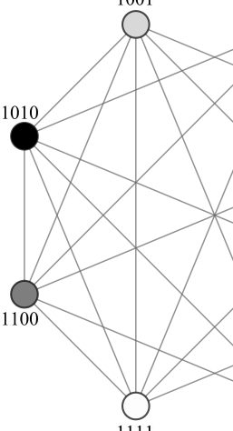
<figcaption class="paper-figure-caption"><b>Fig 1.</b> Figure 1: The complete Boolean-orthogonality graph Ω4. Vertices are colored such that no two connected vertices share a color, illustrating that χ(Ω4) = 4.</figcaption>
</figure>
<figure class="paper-figure-card">

<figcaption class="paper-figure-caption"><b>Fig 2.</b> Figure 2: Scaling of the state space dimension as a function of the graph dimension n. While the quantum memory cost ξ(Ωn) (blue) grows linearly, the lower bound on the classical memory cost χ(Ωn) (red dashed), derived from the Frankl-Rodl (FR) theorem [35], grows exponentially.</figcaption>
</figure>
<figure class="paper-figure-card">
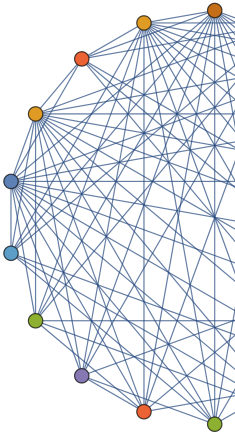
<figcaption class="paper-figure-caption"><b>Fig 3.</b> Figure 3: This 18-vertex graph has χ = 7, ξ = 6 and χf = 5.68. It cannot exhibit state- independent contextuality because χf &lt; ξ [18]. However, it does exhibit representational contextuality, as χ &gt; ξ.</figcaption>
</figure>
<figure class="paper-figure-card">
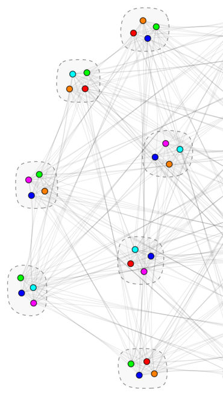
<figcaption class="paper-figure-caption"><b>Fig 4.</b> Figure 4: A valid 6-coloring of the 60-ray orthogonality graph of [42] derived from vertices of the 4D 600-cell. The graph is partitioned into 15 disjoint 4-element orthogonal bases (indicated by the shaded regions). Because each basis forms a clique, every region contains four distinct vertex colors.</figcaption>
</figure>
</div>
<p><strong>Summary.</strong> The paper proves an unconditional exponential memory advantage of Quantum Finite Automata over classical automata by exploiting graph-theoretic contextuality. By analyzing the Kochen-Specker Problem on specific graphs, it shows that the required quantum memory scales linearly with system size ($\xi(G)$), while the classical requirement scales exponentially ($\chi(G)$). This advantage is robust to common types of noise.</p>
<p><strong>Why it may be interesting.</strong> This work provides concrete, quantifiable bounds showing how structural quantum resources (contextuality) translate into computational advantages that are robust against realistic physical noise models, which is crucial for building fault-tolerant quantum computation.</p>
<details>
<summary>Detailed structure</summary>
<p><strong>Main problem.</strong> The paper aims to demonstrate an exponential, noise-resilient memory advantage for quantum finite automata (QFAs) over classical deterministic finite automata (DFAs) by leveraging the structural resource of quantum contextuality.</p>
<p><strong>Main result.</strong> An exponential separation is shown between the classical state requirement ($\chi(G)$) and the quantum memory dimension ($\xi(G)+1$) needed to solve a promise problem derived from the Kochen-Specker Problem (KSP).</p>
<p><strong>Method.</strong> The analysis uses graph theory invariants—the chromatic number $\chi(G)$ and orthogonal rank $\xi(G)$—to establish bounds on classical vs. quantum memory resources for recognizing specific logical structures.</p>
<p><strong>Model / system.</strong> The core model is the comparison between DFAs and QFAs solving a promise problem defined on an exclusivity graph $G$. The advantage is demonstrated using Boolean-orthogonality graphs ($\Omega_n$) or Kochen-Specker graphs derived from high-dimensional polytopes.</p>
<p><strong>Key observables.</strong> Classical memory cost ($N = \chi(G)$) versus Quantum memory dimension ($d = \xi(G)+1$).</p>
<p><strong>Important parameters / regimes.</strong> The exponential scaling difference between $\chi(G)$ and $\xi(G)$, and the maintenance of an $O(1)$ noise threshold against depolarizing/coherent noise.</p>
<p><strong>Assumptions / limitations.</strong> The advantage relies on 'representational contextuality,' defined by the integer gap $\chi(G) > \xi(G)$, which is a stronger condition than statistical contextuality ($\chi_f(G)$).</p>
<p><strong>Figures summary.</strong> Figures illustrate the graph structures (e.g., $\Omega_4$, 18-vertex graph, 60-ray orthogonality graph) and compare the exponential scaling of classical memory cost versus the linear scaling of quantum memory cost.</p>
<p><strong>Paper structure.</strong> The paper first establishes the problem using KSP on a graph $G$. It then proves the lower bound for DFAs ($\chi(G)$). Subsequently, it constructs the QFA solution using $\xi(G)+1$ dimensions and rigorously demonstrates the exponential separation and noise resilience.</p>
</details>
<details>
<summary>Abstract</summary>
<p>Quantum contextuality is widely recognized as an essential non-classical resource underlying quantum technology, yet illuminating the precise mechanisms through which it translates into unconditional computational advantages remains an ongoing challenge. We demonstrate an exponential, noise-resilient memory advantage for quantum finite automata arising from graph-theoretic approaches to contextuality. We define a promise problem on an exclusivity graph $G$ for which any classical deterministic automaton acts as a non-contextual hidden variable model requiring at least $N=χ(G)$ states, where $χ(G)$ is the graph's chromatic number. In contrast, by exploiting a structural phenomenon we term \textit{representational contextuality}, a QFA solves this task using a memory of dimension at most $d=ξ(G)+1$, where $ξ(G)$ is the graph's orthogonal rank. This separation scales exponentially ($d=\mathcal O(n)$ versus $N=2^{Ω(n)}$) for Boolean-orthogonality graphs. Crucially, this memory advantage maintains an $\mathcal{O}(1)$ threshold against both depolarizing and coherent noise.</p>
</details>
<p><sub><a href="#top">↑ back to top</a></sub></p>

<p><a id="paper-2607.00306"></a></p>
<h3 id="scattering-bound-states-and-resonances-in-the-one-dimensional-dirac-equation-via-supersymmetric-quantum-mechanics"><a href="http://arxiv.org/abs/2607.00306v1">Scattering, bound states, and resonances in the one-dimensional Dirac equation via supersymmetric quantum mechanics</a></h3>
<p><strong>Authors:</strong> Camila C. Soares, Luis B. Castro, Antonio S. de Castro<br>
<strong>Type:</strong> theory · <strong>Category:</strong> other · <strong>PDF:</strong> <a href="https://arxiv.org/pdf/2607.00306v1">https://arxiv.org/pdf/2607.00306v1</a><br>
<strong>Analysis basis:</strong> full PDF text, analyzed in chunks</p>
<div class="figure-strip-hint">↔ Scroll figures horizontally</div>
<div class="paper-figures-scroll">
<figure class="paper-figure-card">
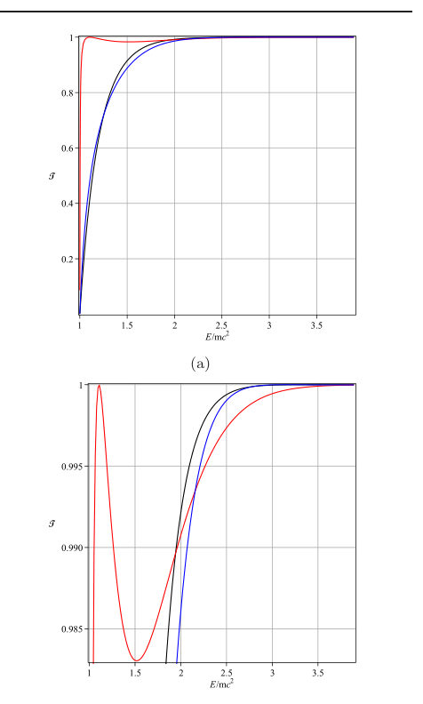
<figcaption class="paper-figure-caption"><b>Fig 1.</b> Fig. 1: Transmission probability T for the Dirac- matched P¨oschl–Teller effective well with ω = 2 and V0 = 0.9 (black), V0 = 1.9 (red), and V0 = 2.9 (blue) (in units where ℏ= c = m = 1). (a) Full energy range. (b) Magnified view of the high-transmission re- gion T ∈[0.983, 1.0].</figcaption>
</figure>
<figure class="paper-figure-card">

<figcaption class="paper-figure-caption"><b>Fig 2.</b> Fig. 2: Energy dependence of the P¨oschl–Teller param- eter λ(E) from the Dirac matching condition for ω = 2 and V0 = 0.9 (black), V0 = 1.9 (red), and V0 = 2.9 (blue) (in units where ℏ= c = m = 1).</figcaption>
</figure>
<figure class="paper-figure-card">
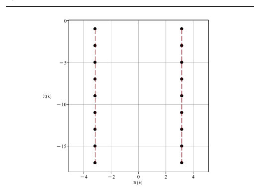
<figcaption class="paper-figure-caption"><b>Fig 3.</b> Fig. 3: Pole pattern in the complex k-plane for the Dirac-matched P¨oschl–Teller barrier with ω = 2, V0 = −2.5, and E0 = 1.2 (in units where ℏ= c = m = 1), yielding η(E0) ≃1.58 and k(±) n = ±ωη(E0) −iω(n + 1</figcaption>
</figure>
</div>
<p><strong>Summary.</strong> This work unifies the study of scattering and bound states for the 1D Dirac equation by mapping it onto a solvable Schrödinger-like problem using symmetry constraints. By applying Supersymmetric Quantum Mechanics to potentials like the Pöschl–Teller, the authors derive closed-form expressions for transmission probabilities. This framework allows them to systematically locate both discrete bound states and continuous resonances via pole analysis in the complex momentum plane.</p>
<p><strong>Why it may be interesting.</strong> The rigorous application of SUSYQM and its connection to spectral properties (bound vs. resonance) provides powerful, exact analytical tools for studying relativistic quantum systems, which is highly relevant for understanding particle confinement or wave propagation in structured media.</p>
<details>
<summary>Detailed structure</summary>
<p><strong>Main problem.</strong> The paper develops a unified theoretical framework to analyze both scattering phenomena (continuum spectrum) and bound states/resonances (discrete spectrum) for the one-dimensional Dirac equation.</p>
<p><strong>Main result.</strong> It successfully maps the relativistic problem onto an effective Schrödinger-like equation, allowing the use of supersymmetric quantum mechanics techniques to derive closed-form expressions for transmission probabilities and characterize resonance poles in the complex momentum plane.</p>
<p><strong>Method.</strong> The core methods involve symmetry reduction (spin/pseudospin), utilizing Supersymmetric Quantum Mechanics (SUSYQM) with shape invariance, and employing analytic continuation to extract bound states from scattering amplitudes.</p>
<p><strong>Model / system.</strong> The system is a fermion described by the one-dimensional Dirac equation subjected to combined scalar and vector potentials. The analysis focuses on specific solvable models like the hyperbolic Pöschl–Teller potential.</p>
<p><strong>Key observables.</strong> Transmission probability $T(k)$, reflection amplitude, bound-state energies (poles of $T(k)$), and resonance frequencies/quasi-normal modes (QNMs) found as poles in the complex momentum plane.</p>
<p><strong>Important parameters / regimes.</strong> The sign of the potential parameter $V_0$ determines whether the system behaves like an attractive well (bound states) or a repulsive barrier (resonances).</p>
<p><strong>Assumptions / limitations.</strong> Key assumptions include the existence of spin-symmetry ($\Delta=0$) or pseudospin-symmetry ($\Sigma=0$) to reduce the coupled Dirac system, and assuming short-range interactions that vanish at infinity.</p>
<p><strong>Figures summary.</strong> Figures illustrate the energy dependence of scattering quantities, showing how $T(k)$ approaches unity in certain limits, and depict the pole structure in the complex momentum plane for resonance analysis.</p>
<p><strong>Paper structure.</strong> The paper proceeds by establishing the unified mapping from the Dirac equation to a Schrödinger-like problem. It then applies SUSYQM techniques using shape invariance to solve the Pöschl–Teller potential case, deriving scattering amplitudes, and finally analyzing the pole structure in the complex plane to distinguish between bound states and resonances.</p>
</details>
<details>
<summary>Abstract</summary>
<p>We develop a unified treatment of scattering and discrete spectra for the one-dimensional Dirac equation with scalar and vector interactions. Under the spin-symmetry condition, the coupled first-order Dirac system maps exactly onto an effective Sturm--Liouville (Schrö-din-ger-like) problem for a single spinor component. This mapping provides a convenient framework for analyzing transmission, reflection, and analytic continuation. As an explicit application, we consider effective interactions of hyperbolic Pöschl--Teller type and exploit supersymmetric quantum mechanics and shape invariance to obtain a closed-form expression for the transmission probability. The bound-state spectrum is then recovered from the poles of the analytically continued transmission amplitude, reproducing known results and offering a unified description of scattering and bound states. For the barrier configuration, we briefly comment on the resulting pole pattern in the complex momentum plane and its connection with resonance and quasi-normal-mode behavior. Moreover, we use the chiral transformation to relate the spin- and pseudospin-symmetry sectors and translate results between them without repeating the full derivation.</p>
</details>
<p><sub><a href="#top">↑ back to top</a></sub></p>
</details>
<h2 id="secondary-cond-mat-archives">Secondary cond-mat archives</h2>
<p><em>Papers from cond-mat.mtrl-sci, mes-hall, other, soft, supr-con. These archives are de-prioritized — they appear at the end regardless of relevance score.</em></p>
<h3 id="relevant-in-secondary-archives-21">Relevant in secondary archives (21)</h3>

<p><a id="paper-2607.00520"></a></p>
<h3 id="real-time-dynamics-of-triplet-resonant-tunneling-driven-by-nonequilibrium-phonons"><a href="http://arxiv.org/abs/2607.00520v1">Real-time dynamics of triplet-resonant tunneling driven by nonequilibrium phonons</a></h3>
<p><strong>Authors:</strong> Kazuyuki Kuroyama, Sasha R. Valentin, Arne Ludwig, Andreas D. Wieck, Yasuhiro Tokura, Seigo Tarucha, Sadashige Matsuo<br>
<strong>Type:</strong> experiment · <strong>Category:</strong> statistical mechanics · <strong>PDF:</strong> <a href="https://arxiv.org/pdf/2607.00520v1">https://arxiv.org/pdf/2607.00520v1</a><br>
<strong>Analysis basis:</strong> full PDF text, analyzed in chunks
<strong>Topic relevance:</strong> 🔥 <code>driven-dissipative phase transition</code> <strong>4/5</strong> · 🔥 <code>non-equilibrium dynamics</code> <strong>4/5</strong> · <code>methods for driven-dissipative</code> <strong>3/5</strong> · <code>non-equilibrium universality</code> <strong>3/5</strong> · <code>spintronics-quantum-optics interface</code> <strong>3/5</strong> · <code>Keldysh / 2PI / non-Gaussian methods</code> <strong>2/5</strong> · <code>Kondo &amp; dissipative impurity</code> <strong>2/5</strong> · <code>measurement-induced transitions</code> <strong>2/5</strong> · <code>quantum measurements</code> <strong>2/5</strong> · <code>analog quantum simulation</code> <strong>1/5</strong> · <code>correlated / nonlocal dissipation</code> <strong>1/5</strong> · <code>exotic spin models in light-matter</code> <strong>1/5</strong> · <code>scars &amp; prethermalization</code> <strong>1/5</strong></p>
<div class="figure-strip-hint">↔ Scroll figures horizontally</div>
<div class="paper-figures-scroll">
<figure class="paper-figure-card">

<figcaption class="paper-figure-caption"><b>Fig 1.</b> FIG. 1. (a) Geometry of our DQD sample with a charge sensor and a QD-based phonon source. (b) Charge stability diagram of the DQD near the (1,1)-(0,2) inter-dot resonance at 𝑉PS = 0 mV. The singlet resonance line is guided by the blue dashed line, and the boundaries of the charge states are guided by the black dashed lines. (c) Charge stability diagram measured at 𝑉PS = 0.975 mV. The singlet (GS) and triplet (ES) resonance lines are indicated by the blue and red dashed lines. (d,e) Transition diagrams at the singlet (d) and triplet (e) resonance conditions. 1sL and 1sR denote the 1s orbitals in the left and right QDs, respectively, and 2pR denotes the 2p orbital in the right QD.</figcaption>
</figure>
<figure class="paper-figure-card">

<figcaption class="paper-figure-caption"><b>Fig 2.</b> FIG. 2. (a) Typical time trace of inter-dot tunneling events measured at the singlet resonance. (b) Typical time trace of inter-dot tunneling events measured at the triplet resonance. (c) Charge stability diagram measured under phonon irradiation at slightly different inter-dot tunnel coupling strength from Fig. 1(c) by changing a gate voltage applied to gate C. (d) Inter-dot tunnel rates of the (1,1)→(0,2) tunneling (red squares) and the (0,2)→(1,1) tunneling (green circles) extracted along the yellow dashed cut in (c). The left (right) peak corresponds to the singlet (triplet) resonance.</figcaption>
</figure>
<figure class="paper-figure-card">

<figcaption class="paper-figure-caption"><b>Fig 3.</b> FIG. 3. (a, b) (0,2) and (1,1) waiting-time histograms obtained from the time traces measured at the singlet-resonance (GS) are plotted, respectively. The red curves are fits to a single- exponential function in (a) and a double-exponential function in (b). (c,d) (0,2) and (1,1) waiting-time histograms obtained from the time traces measured at the triplet resonance condition (ES). The red curves are fits to a single-exponential function in (c) and a double- exponential function in (d). (e) DQD transition diagram at the triplet resonance. The spin state initially located at |𝑆(0,2)⟩ is frequently excited to |𝑇(0,2)⟩ by a single phonon excitation. When the DQD spin state enters |𝑆(1,1)⟩, the...</figcaption>
</figure>
<figure class="paper-figure-card">

<figcaption class="paper-figure-caption"><b>Fig 4.</b> FIG. 4. (a) Typical time trace of the DQD inter-dot tunneling events observed at the singlet resonance for reduced inter-dot tunnel coupling, tuned by applying a more negative voltage to gate C (see Fig. 1(a) for the sample geometry). (b, c) Typical time trace of inter-dot tunneling events measured at the triplet resonance marked by the yellow circle and the green square in Fig. 1(c). The time trace in (b) is measured at the DQD operation point closer to the (1,2) region, while the time trace in (c) is measured at the DQD operation point closer to the (0,1) region. (d,e) Schematic sequences illustrating phonon-driven unidirectional charge- transfer cycles: (d) (0,2)→(1,1)→(1,2)→(0,2) and...</figcaption>
</figure>
</div>

<p><strong>Summary.</strong> The authors experimentally study charge and spin dynamics in a double quantum dot subjected to nonequilibrium phonon irradiation. They observe that the system exhibits resonant tunneling at triplet resonance, and crucially, they demonstrate strong nonreciprocal electron transport cycles. This work establishes an accessible method for investigating directed current flow driven by energy gradients in nanoscale solid-state devices.</p>
<p><strong>Why it may be interesting.</strong> This work provides a clean experimental platform for studying non-equilibrium quantum transport and rectification effects driven by coupling to an external bath (phonons), which is highly relevant to open quantum systems theory.</p>
<details>
<summary>Detailed structure</summary>
<p><strong>Main problem.</strong> The study investigates real-time charge and spin dynamics in excited states of a double quantum dot (DQD) driven by nonequilibrium phonons to understand emergent functionalities beyond equilibrium.</p>
<p><strong>Main result.</strong> The research demonstrates that phonon irradiation induces resonant inter-dot tunneling at triplet resonance, leading to strong unidirectional electron transport cycles with high rectification ($\eta \approx 1$) when coupling is weak.</p>
<p><strong>Method.</strong> Time-resolved charge sensing and waiting-time statistics are used to measure transition rates between different spin/charge states in the DQD under controlled phonon excitation.</p>
<p><strong>Model / system.</strong> The physical system is a semiconductor Double Quantum Dot (DQD) fabricated on an AlGaAs/GaAs/AlGaAs heterostructure, which acts as the quantum device. Phonons are generated by applying a DC bias to a nearby source QD, creating a nonequilibrium phonon density gradient.</p>
<p><strong>Key observables.</strong> Charge state transition time traces, inter-dot tunneling rates ($\Gamma_{ij}$), waiting-time histograms (single/double exponential), and the unidirectional transfer asymmetry ($\eta$).</p>
<p><strong>Important parameters / regimes.</strong> Phonon bias voltage ($V_{PS}$), detuning voltage ($V_R$), and the relative strength of inter-dot coupling versus dot-reservoir rates.</p>
<p><strong>Assumptions / limitations.</strong> The analysis relies on rate-equation models for DQD spin states, and some fitting procedures assume specific functional forms for waiting-time distributions.</p>
<p><strong>Figures summary.</strong> Figures show charge stability diagrams revealing triplet resonance lines (Fig. 1c), time traces of transitions at both singlet and triplet resonances (Figs. 2a/b), histograms confirming double exponential behavior at ES, and finally, current measurements demonstrating unidirectional cycles with high rectification ($\eta$) (Fig. 4).</p>
<p><strong>Paper structure.</strong> The paper progresses from establishing the basic physics by observing resonant tunneling at GS vs. ES; it then analyzes detailed rate dynamics using waiting-time statistics to distinguish spin-conserving versus spin-flip processes; finally, it focuses on the nonreciprocal transport regime induced by phonon gradients.</p>
</details>
<details>
<summary>Abstract</summary>
<p>Driven nonequilibrium systems can host emergent functionalities beyond equilibrium, but real-time access to excited-state dynamics remains limited. Here we report real-time measurements of phonon-driven charge and spin dynamics in excited states of a double quantum dot. Under phonon irradiation, resonant inter-dot tunneling emerges at triplet resonance. Time-resolved charge sensing reveals that the resonant inter-dot tunneling is strongly modified by spin blockade. For weaker inter-dot coupling, the nonequilibrium phonon environment generates a unidirectional transport cycle along the phonon density gradient.</p>
</details>
<p><sub><a href="#top">↑ back to top</a></sub></p>
<hr>
<p>
<a href="index.html">← Index</a>
 · <a href="papers_04.html">← Previous</a> · <a href="papers_06.html">Next →</a>
</p>
<hr>

</body>
</html>
